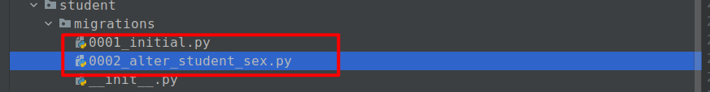

常用数据库有2大阵营：
xxxxxxxxxx611. 关系型数据库[RDB]: 数据库中存储数据的表之间存在某种内在的关联关系，因为这种关系，所以我们称这一类型的数据为关系型数据库。2 常见的数据库：mysql[MariaDB]，PostgreSQL（简称PG），Oracle，MSSQLServer，DB2，sqlite，Access，SequoiaDB3 共同的特点：都使用了SQL语句进行数据库操作。452. 非关系型数据库[NOSQL（Not Only SQL）]：泛指那些不适用SQL语句进行数据库操作的所有其他数据库。6 常见的数据库：Redis，MongoDB， Memcached，Elasticsearch，HBase/CouchDB, Neo4j、FlockDB、AllegroGrap，rethinkDB表与表之间的内在关联关系，一般就是表之间的外键关系
Student 学生模型
| student_id | name | class_id |
|---|---|---|
| 1 | 小明 | 1 |
| 2 | 小黑 | 1 |
| 3 | 小红 | 2 |
Course 课程模型
| class_id | class_name | |
|---|---|---|
| 1 | 计算机科学1班 | |
| 2 | 商务英语1班 | |
django中内置了一个基于面向对象的强大的ORM框架给开发者对数据库进行操作的。
O是Object，也就类对象的意思。
R是Relational，翻译成中文是关系，也就是关系型数据库中数据表的意思。
M是mapping，是映射的意思，表示类对象和数据表之间的映射关系。
ORM框架会帮我们把类对象和数据表进行了一对一的映射，让我们可以通过类对象来操作对应的数据表。
ORM框架还可以根据我们设计的类自动帮我们生成数据库中的数据表，也就是使用代码生成数据库建表语句，省去了我们自己建表的过程。
django中内嵌了ORM框架，不需要直接编写SQL语句进行数据库操作，而是通过定义模型类，操作模型类来完成对数据库中数据的增删改查和数据表的创建删除等操作。
- 数据模型类都在一个地方定义，更容易更新和维护，也利于重用代码。
- ORM 有现成的工具，很多功能都可以自动完成，比如数据消除、预处理、事务等等。
- ORM迫使开发人员使用 MVC 架构，ORM 就是天然的 Model，最终使代码结构更清晰易懂。
- 基于 ORM 的业务代码比较简单，代码量少，语义性好，容易理解。
- 新手对于复杂业务容易写出性能不佳的 SQL,有了ORM不必编写复杂的SQL语句, 只需要通过操作模型对象即可同步修改数据表中的数据.
- 开发中应用ORM将来如果要切换数据库.只需要切换ORM底层对接数据库的驱动【修改配置文件的连接地址即可】
- ORM 库不是轻量级工具，需要花很多精力学习和设置，甚至不同的项目框架会存在不同操作的ORM。
- 对于复杂的业务查询，ORM表达起来比原生的SQL要更加困难和复杂。ORM并非万能的，总有些功能需要我们使用原生SQL语句，当然ORM也提供执行原生SQL语句的功能
- ORM操作数据库的性能要比使用原生pymysql执行SQL差。[ORM内部要拼接SQL语句]
- ORM 抽象掉了数据库层，开发者无法了解底层的数据库操作，也无法定制一些特殊的 SQL。【自己使用pymysql另外操作即可，用了ORM并不表示当前项目不能使用别的数据库操作工具。】
在settings.py中保存了数据库的连接配置信息，Django默认初始配置使用sqlite数据库。
我们可以通过以下步骤来使用django的数据库操作
xxxxxxxxxx511. settings.py配置数据库连接信息22. 在目标子应用下的models.py中定义模型类33. 生成数据库迁移文件并执行迁移文件[注意：数据迁移是一个独立的用于创建数据表的功能，这个功能在其他web框架未必和ORM一块的]4 第3步非必要，有些公司直接由DBA（数据库管理员）设计与管理数据表的，那么就不需要在django中数据迁移了。直接开撸代码54. 通过模型类对象提供的方法或属性完成数据表的增删改查操作xxxxxxxxxx31pip install PyMySQL2# 如果上面命令安装失败，则可以使用以下命令安装：3# conda install -c conda-forge pymysql__init__.py文件中添加如下语句，djdemo/__init__.py，代码：xxxxxxxxxx31from pymysql import install_as_MySQLdb23install_as_MySQLdb() # 让pymysql以MySQLDB的运行模式和Django的ORM对接运行作用是让Django的ORM能以mysqldb的方式来调用PyMySQL。
djdemo/settings.pyxxxxxxxxxx221# Database2# https://docs.djangoproject.com/zh-hans/4.2/ref/settings/#databases3# 数据库配置4DATABASES = {5 'default': {6 # 'ENGINE': 'django.db.backends.sqlite3',7 # 'NAME': BASE_DIR / 'db.sqlite3',8 'ENGINE': 'django.db.backends.mysql', # ORM的底层对接pymysql的核心引擎类9 'NAME': 'school', # 数据库名10 'PORT': 3306, # 端口11 'HOST': '127.0.0.1', # 数据库IP12 'USER': 'root', # 账号13 'PASSWORD': '123', # 密码14 'POOL_OPTIONS': { # pool表示数据库连接池配置，主要为了节省连接数据库的开销，临时存储数据库连接对象15 'POOL_SIZE': 10, # 默认情况下，打开的数据库连接对象的数量 [1,2,3,4,5,6,7,8,9,10]16 'MAX_OVERFLOW': 30, # 负载情况下，允许溢出的连接数量 [11,12,13,14,15,16,17,18,19,20]17 }18 # "TEST": {19 #20 # }21 }22}
xxxxxxxxxx11create database school default charset=utf8mb4; # mysql8.0之前的版本
接下来以学校的学生管理为例进行演示。[系统大概3-4表，学生信息，课程信息，老师信息]，之前我们在mysql基础时直接使用SQL来建表，现在我们可以使用django提供的数据迁移来生成建表SQL语句，并创建数据表。使用数据迁移，必须先定义模型。
再次强调，工作中并非每个公司都使用数据迁移的！
创建子应用student，注册子应用并引入子应用路由.
xxxxxxxxxx11python manage.py startapp studentsettings.py，代码：
xxxxxxxxxx41INSTALLED_APPS = [2 # 。。。3 'student',4]djdemo/urls.py，总路由代码：
xxxxxxxxxx41urlpatterns = [2 # 省略，如果前面有重复的路由，改动以下。3 path("student/", include("student.urls")),4]student.urls，代码：
xxxxxxxxxx61from django.urls import path2from . import views3urlpatterns = [4 5]6
在student/models.py 文件中定义模型类。
xxxxxxxxxx691from django.db import models2"""31. django中所有的模型，必须直接或间接继承models.Model模型基类4"""56"""7-- auto-generated definition8create table student9(10 id bigint auto_increment11 primary key,12 name varchar(15) not null,13 age smallint not null,14 sex tinyint(1) not null,15 class varchar(50) not null,16 mobile varchar(20) not null,17 description longtext null,18 status int null,19 created_time datetime(6) null,20 updated_time datetime(6) null,21 constraint mobile22 unique (mobile)23);2425create index student_class_ad9a393126 on student (class);2728create index student_name_68e2658329 on student (name);30"""313233class BaseModel(models.Model):34 # auto_now_add 设置新建数据时，把当前时间戳作为默认值保存到当前字段中35 created_time = models.DateTimeField(auto_now_add=True, null=True, verbose_name="创建时间")36 # auto_now 设置更新数据时，把当前时间戳作为默认值保存到当前字段中37 updated_time = models.DateTimeField(auto_now=True, null=True, verbose_name="更新时间")3839 class Meta:40 # 设置当前类为抽象模型，表示当前模型并不是一个真正的表，django就不会跟踪识别这个模型了。41 abstract = True424344# Create your models here.45class Student(BaseModel):46 STATUS = (47 # (数据库值, "程序显示给外界看的文本"),48 (0, "正常"),49 (1, "未入学"),50 (2, "已毕业"),51 )52 # django模型中不需要自己单独声明主键，模型会自动创建主键ID，将来直接可以通过模型对象.id 或者 模型对象.pk就可以调用主键了。53 name = models.CharField(max_length=15, db_index=True, verbose_name="姓名")54 age = models.SmallIntegerField(default=0, verbose_name="年龄")55 sex = models.BooleanField(default=True, verbose_name="性别")56 classmate = models.CharField(max_length=50, db_column="class", default="", db_index=True, verbose_name="班级编号")57 mobile = models.CharField(max_length=20, unique=True, verbose_name="手机号码")58 description = models.TextField(blank=True, null=True, verbose_name="个性签名")59 status = models.IntegerField(choices=STATUS, default=1, null=True, verbose_name="毕业状态")6061 class Meta:62 db_table = "student"63 verbose_name = "学生信息"64 verbose_name_plural = verbose_name6566 def __str__(self):67 # 当使用print打印django模型对象时的输出内容，返回值必须是字符串，方法名固定68 return self.name69可通过Meta.db_table 指明数据库表名。
模型类如果未指明表名Meta.db_table，Django默认以 小写子应用目录名_小写模型类名 为数据库表名。
django会为模型自动声明一个自动增长的主键列，每个模型只能有一个主键列。
如果使用选项设置某个字段的约束属性为主键列(primary_key)后，django不会再创建自动增长的主键列。
xxxxxxxxxx31class Student(models.Model):2 # django会自动在创建数据表的时候生成id主键/还设置了一个调用别名 pk3 id = models.BigAutoField(primary_key=True, verbose_name="主键") # 设置主键默认创建的主键列属性名为id，也可以使用pk代替id，pk全拼为primary key。
不能是python的关键字或保留字。
不允许使用连续的2个下划线，这是因为django的查询方式提供了很多以__xx开头的方法或属性，所以__xx是django的模型内部的关键字，不能使用！
定义属性时需要指定字段类型，通过字段类型的参数指定选项，语法如下：
xxxxxxxxxx61属性名 = models.字段类型(约束选项, verbose_name="注释")23# 在mysql数据表中的字段名如果在python是一个关键字/保留字。则选项中需要通过db_column()来进行关联绑定4class_name = models.SmallIntegerField(db_column="class", verbose_name="班级")5# class就是实际上在mysql数据表中的真实字段名6# class_name 就是python中将来用于操作数据的属性名 文档：https://docs.djangoproject.com/zh-hans/4.2/ref/models/fields/#field-types
| 类型 | 说明 |
|---|---|
| AutoField | 自动增长的IntegerField，通常不用指定，不指定时Django会自动创建属性名为id的自动增长属性，并且提供了一个pk属性与主键进行关联。django3.0以后，系统默认采用了BigAutoField，从原来的int类型变成了bigint类型，其他不变。 |
| BooleanField | 布尔字段，值为True或False，实际上在数据库中存储的是smallint，采用0/1表示False/True |
| NullBooleanField | 支持None、True、False三种值，在4.0版本的django中已经被声明废弃了。 |
| CharField | 字符串，参数max_length表示最大字符个数，对应mysql中的varchar |
| TextField | 大文本字段，一般大段文本（超过4000个字符）才使用，对应mysql中的bigtext。 |
| IntegerField | 整数，对应mysql中的int |
| BigIntegerField | 大整型，对应mysql的bitint |
| DecimalField | 十进制定点数， 参数max_digits表示总位数， 参数decimal_places表示小数位数，常用于表示分数和价格 Decimal(max_digits=7, decimal_places=2) ==> 99999.99~ 0.00 |
| FloatField | 浮点数 |
| DateField | 日期，年-月-日 参数auto_now表示每次创建/更新对象时，自动设置该字段的值为当前时间。 参数auto_now_add表示当对象第一次被创建时自动设置该字段的值为当前时间。 参数auto_now_add和auto_now是相互排斥的，一起使用会发生错误。 |
| TimeField | 时间，时分秒，参数同DateField |
| DateTimeField | 日期时间，年月日时分秒，参数同DateField |
| FileField | 继承于CharField，上传文件字段类型，但是django在FileField中内置了文件上传保存类, django可以通过模型的字段存储自动保存上传文件, 但是在数据库中本质上保存的仅仅是文件在项目中的存储路径!!参数upload_to，表示设置当前上传文件的存储路径位置，当前路径如果不存在，django会自动生成路径。 |
| ImageField | 继承于FileField，对上传的内容进行校验，确保是有效的图片 |
| EmailField | 继承于CharField，邮件字段类型，但是增加字段值的验证是否为邮件格式 |
| UUIDField | 继承于CharField，UUID字段类型，保存内容格式字符串，但是会验证当前字段是否是UUID格式。 |
文档：https://docs.djangoproject.com/zh-hans/4.2/ref/models/fields/#field-options
| 选项 | 说明 |
|---|---|
| null | 如果为True，表示允许为空，默认值是False。相当于python的None |
| blank | 如果为True，则该字段允许为空白，默认值是False。 相当于python的空字符串："" |
| db_column | 数据表中真实的字段名称，如果未指定，则使用模型类属性的名称。防止数据字段是python的关键字。 |
| db_index | 若值为True, 则在表中会为此字段创建索引，默认值是False。 相当于SQL语句中的key |
| default | 默认值，当不填写数据时，使用该选项的值作为字段的默认值。 |
| primary_key | 如果为True，则该字段在表中设置为主键，默认值是False，一般不用设置，django会自动默认设置id作为主键。 |
| unique | 如果为True，则该字段在表中创建唯一索引，默认值是False。相当于SQL语句中的unique |
| choices | 设置当前字段值的候选值选项，必须是二维序列，子序列必须是2个成员。 |
| help_text | 设置当前字段的辅助提示文本信息，是一个人类可读的文本信息。一般显示给客户端（前台）的。 |
| verbose_name | 设置当前字段的提示字段名，是一个人类可读的名称，一般显示给服务端（后台）的。 |
注意：null是数据库范畴的概念，blank是表单验证范畴的
完成了模型的创建以后，因为之前我们在数据库中已通过SQL语句在school创建了student这个数据表了。所以我们此时只要模型的字段和数据表的字段名对应一致，则直接可以在视图中对模型进行操作了。
xxxxxxxxxx381-- 1. 安装数据库驱动类， 2-- pip install pymysql3-- 进入数据库中创建一个测试的数据表4-- mysql -uroot -p1235create database school;6use school;78-- 完成上面的步骤以后，建表有2种方式：手动SQL语句建表与数据迁移9-- 数据迁移10-- cd 项目根目录[manage.py所在位置]11python manage.py makemigrations12python manage.py migrate1314-- 建表语句生成如下：15-- auto-generated definition16create table student17(18 id bigint auto_increment19 primary key,20 name varchar(15) not null,21 age smallint not null,22 sex tinyint(1) not null,23 class varchar(50) not null,24 mobile varchar(20) not null,25 description longtext null,26 status int null,27 created_time datetime(6) null,28 updated_time datetime(6) null,29 constraint mobile30 unique (mobile)31);3233create index student_class_ad9a393134 on student (class);3536create index student_name_68e2658337 on student (name);38
在数据库终端添加测试数据，SQL语句：
xxxxxxxxxx1021INSERT INTO `student` (id, name, sex, class, age, description, created_time, updated_time, mobile, status) 2VALUES 3(1,'赵华',1,307,22,'对于勤奋的人来说，成功不是偶然；对于懒惰的人来说，失败却是必然。', NOW(), NOW(), "13312345601", 0),4(2,'程星云',1,301,20,'人生应该如蜡烛一样，从顶燃到底，一直都是光明的。',NOW(), NOW(), "13312345602", 0),5(3,'陈峰',1,504,21,'在不疯狂，我们就老了，没有记忆怎么祭奠呢？',NOW(), NOW(), "133123456703", 0),6(4,'苏礼就',1,502,20,'不要为旧的悲伤，浪费新的眼泪。',NOW(), NOW(), "13312345604", 0),7(5,'张小玉',2,306,18,'没有血和汗水就没有成功的泪水。',NOW(), NOW(), "13312345605", 0),8(6,'吴杰',1,307,19,'以大多数人的努力程度之低，根本轮不到去拼天赋',NOW(), NOW(), "13312345606", 0),9(7,'张小辰',2,405,19,'人生的道路有成千上万条， 每一条路上都有它独自的风景。',NOW(), NOW(), "13312345607", 0),10(8,'王丹丹',2,502,22,'平凡的人听从命运，坚强的人主宰命运。',NOW(), NOW(), "13312345608", 0),11(9,'苗俊伟',1,503,22,'外事找谷歌，内事找百度。',NOW(), NOW(), "13312345609", 0),12(10,'娄镇明',1,301,22,'不经三思不求教，不动笔墨不读书。',NOW(), NOW(), "13312345610", 0),13(11,'周梦琪',2,306,19,'学习与坐禅相似，须有一颗恒心。',NOW(), NOW(), "13312345611", 0),14(12,'欧阳博',1,503,23,'春去秋来，又一年。What did you get ?',NOW(), NOW(), "13312345612", 0),15(13,'颜敏莉',2,306,20,'Knowledge makes humble, ignorance makes proud.',NOW(), NOW(), "13312345613", 0),16(14,'柳宗仁',1,301,20,'有志者事竟成。',NOW(), NOW(), "13312345614", 0),17(15,'谢海龙',1,402,22,'这世界谁也不欠谁，且行且珍惜。',NOW(), NOW(), "13312345615", 0),18(16,'邓士鹏',1,508,22,'青，取之于蓝而青于蓝；冰，水为之而寒于水。',NOW(), NOW(), "13312345616", 0),19(17,'宁静',2,502,23,'一息若存 希望不灭',NOW(), NOW(), "13312345617", 0),20(18,'上官屏儿',2,502,21,'美不自美,因人而彰。',NOW(), NOW(), "13312345618", 0),21(19,'孙晓静',2,503,20,'人生本过客，何必千千结；无所谓得失，淡看风和雨。',NOW(), NOW(), "13312345619", 0),22(20,'刘承志',1,306,20,'good good study,day day up! ^-^',NOW(), NOW(), "13312345620", 0),23(21,'王浩',1,503,21,'积土而为山，积水而为海。',NOW(), NOW(), "13312345621", 0),24(22,'钟无艳',2,303,19,'真者，精诚之至也，不精不诚，不能动人。',NOW(), NOW(), "13312345622", 0),25(23,'莫荣轩',1,409,22,'不管发生什么事，都请安静且愉快地接受人生，勇敢地、大胆地，而且永远地微笑着。',NOW(), NOW(), "13312345623", 0),26(24,'张裕民',1,303,21,'伟大的目标形成伟大的人物。',NOW(), NOW(), "13312345624", 0),27(25,'江宸轩',1,407,22,'用最少的悔恨面对过去。',NOW(), NOW(), "13312345625", 0),28(26,'谭季同',1,305,21,'人总是珍惜未得到的，而遗忘了所拥有的。',NOW(), NOW(), "13312345626", 0),29(27,'李松风',1,504,19,'明天的希望，让我们忘了今天的痛苦。',NOW(), NOW(), "13312345627", 0),30(28,'叶宗政',1,407,20,'因害怕失败而不敢放手一搏，永远不会成功。',NOW(), NOW(), "13312345628", 0),31(29,'魏雪宁',2,306,20,'成功与失败只有一纸之隔',NOW(), NOW(), "13312345629", 0),32(30,'徐秋菱',2,404,19,'年轻是我们唯一拥有权利去编织梦想的时光。',NOW(), NOW(), "13312345630", 0),33(31,'曾嘉慧',2,301,19,'有一分热，发一分光。就令萤火一般，也可以在黑暗里发一点光，不必等候炬火。',NOW(), NOW(), "13312345631", 0),34(32,'欧阳镇安',1,408,23,'青春虚度无所成，白首衔悲补何及!',NOW(), NOW(), "13312345632", 0),35(33,'周子涵',2,309,19,'青春是一个普通的名称，它是幸福美好的，但它也是充满着艰苦的磨炼。',NOW(), NOW(), "13312345633", 0),36(34,'宋应诺',2,501,23,'涓滴之水终可以磨损大石，不是由于它力量强大，而是由于昼夜不舍的滴坠。',NOW(), NOW(), "13312345634", 0),37(35,'白瀚文',1,305,19,'一个人假如不脚踏实地去做，那么所希望的一切就会落空。',NOW(), NOW(), "13312345635", 0),38(36,'陈匡怡',2,505,19,'一份耕耘，一份收获。',NOW(), NOW(), "13312345636", 0),39(37,'邵星芸',2,503,22,'冰冻三尺非一日之寒。',NOW(), NOW(), "13312345637", 0),40(38,'王天歌',2,302,21,'任何的限制，都是从自己的内心开始的。',NOW(), NOW(), "13312345638", 0),41(39,'王天龙',1,302,22,'再长的路，一步步也能走完，再短的路，不迈开双脚也无法到达。',NOW(), NOW(), "13312345639", 0),42(40,'方怡',2,509,23,'智者不做不可能的事情。',NOW(), NOW(), "13312345640", 0),43(41,'李伟',1,505,19,'人之所以能，是相信能。',NOW(), NOW(), "13312345641", 0),44(42,'李思玥',2,503,22,'人的一生可能燃烧也可能腐朽，我不能腐朽，我愿意燃烧起来。',NOW(), NOW(), "13312345642", 0),45(43,'赵思成',1,401,18,'合抱之木，生于毫末;九层之台，起于累土。',NOW(), NOW(), "13312345643", 0),46(44,'蒋小媛',2,308,22,'不积跬步无以至千里，不积细流无以成江河。',NOW(), NOW(), "13312345644", 0),47(45,'龙华',1,510,19,'只要持续地努力，不懈地奋斗，就没有征服不了的东西。',NOW(), NOW(), "13312345645", 0),48(46,'牧婧白夜',2,501,21,'读不在三更五鼓，功只怕一曝十寒。',NOW(), NOW(), "13312345646", 0),49(47,'江俊文',1,304,19,'立志不坚，终不济事。',NOW(), NOW(), "13312345647", 0),50(48,'李亚容',2,304,18,'Keep on going never give up.',NOW(), NOW(), "13312345648", 0),51(49,'王紫伊',2,301,22,'最可怕的敌人，就是没有坚强的信念。',NOW(), NOW(), "13312345649", 0),52(50,'毛小宁',1,501,19,'要从容地着手去做一件事，但一旦开始，就要坚持到底。',NOW(), NOW(), "13312345650", 0),53(51,'董 晴',2,507,19,'常常是最后一把钥匙打开了门。贵在坚持',NOW(), NOW(), "13312345651", 0),54(52,'严语',2,405,18,'逆水行舟，不进则退。',NOW(), NOW(), "13312345652", 0),55(53,'陈都灵',2,503,19,'无论什么时候，不管遇到什么情况，我绝不允许自己有一点点灰心丧气。',NOW(), NOW(), "13312345653", 0),56(54,'黄威',1,301,23,'我的字典里面没有“放弃”两个字',NOW(), NOW(), "13312345654", 0),57(55,'林佳欣',2,308,23,'梦想就是一种让你感到坚持,就是幸福的东西。',NOW(), NOW(), "13312345655", 0),58(56,'翁心颖',2,303,19,'有目标的人才能成功，因为他们知道自己的目标在哪里。',NOW(), NOW(), "13312345656", 0),59(57,'蒙毅',1,502,22,'所谓天才，就是努力的力量。',NOW(), NOW(), "13312345657", 0),60(58,'李小琳',2,509,22,'每天早上对自己微笑一下。这就是我的生活态度。',NOW(), NOW(), "13312345658", 0),61(59,'伍小龙',1,406,19,'一路上的点点滴滴才是我们的财富。',NOW(), NOW(), "13312345659", 0),62(60,'晁然',2,305,23,'人的价值是由自己决定的。',NOW(), NOW(), "13312345660", 0),63(61,'端木浩然',1,507,18,'摔倒了爬起来再哭。',NOW(), NOW(), "13312345661", 0),64(62,'姜沛佩',2,309,21,'Believe in yourself.',NOW(), NOW(), "13312345662", 0),65(63,'李栋明',1,306,19,'虽然过去不能改变，但是未来可以。',NOW(), NOW(), "13312345663", 0),66(64,'柴柳依',2,508,23,'没有实践就没有发言权。',NOW(), NOW(), "13312345664", 0),67(65,'吴杰',1,401,22,'人生有两出悲剧。一是万念俱灰;另一是踌躇满志',NOW(), NOW(), "13312345665", 0),68(66,'杜文华',1,507,19,'有智者立长志，无志者长立志。',NOW(), NOW(), "13312345666", 0),69(67,'邓珊珊',2,510,18,'Action is the proper fruit of knowledge.',NOW(), NOW(), "13312345667", 0),70(68,'杜俊峰',1,507,23,'世上无难事，只要肯登攀。',NOW(), NOW(), "13312345668", 0),71(69,'庄信杰',1,301,22,'知识就是力量。',NOW(), NOW(), "13312345669", 0),72(70,'宇文轩',1,402,23,'如果你想要某样东西，别等着有人某天会送给你。生命太短，等不得。',NOW(), NOW(), "13312345670", 0),73(71,'黄佳怿',2,510,19,'Learn and live.',NOW(), NOW(), "13312345671", 0),74(72,'卫然',1,510,18,'神于天，圣于地。',NOW(), NOW(), "13312345672", 0),75(73,'耶律齐',1,307,23,'如果不是在海市蜃楼中求胜，那就必须脚踏实地去跋涉。',NOW(), NOW(), "13312345673", 0),76(74,'白素欣',2,305,18,'欲望以提升热忱，毅力以磨平高山。',NOW(), NOW(), "13312345674", 0),77(75,'徐鸿',1,403,23,'最美的不是生如夏花，而是在时间的长河里，波澜不惊。',NOW(), NOW(), "13312345675", 0),78(76,'上官杰',1,409,19,'生活之所以耀眼，是因为磨难与辉煌会同时出现。',NOW(), NOW(), "13312345676", 0),79(77,'吴兴国',1,406,18,'生活的道路一旦选定，就要勇敢地走到底，决不回头。',NOW(), NOW(), "13312345677", 0),80(78,'庄晓敏',2,305,18,'Never say die.',NOW(), NOW(), "13312345678", 0),81(79,'吴镇升',1,509,18,'Judge not from appearances.',NOW(), NOW(), "13312345679", 0),82(80,'朱文丰',1,304,19,'每个人都比自己想象的要强大，但同时也比自己想象的要普通。',NOW(), NOW(), "13312345680", 0),83(81,'苟兴妍',2,508,18,'Experience is the best teacher.',NOW(), NOW(), "13312345681", 0),84(82,'祝华生',1,302,21,'浅学误人。',NOW(), NOW(), "13312345682", 0),85(83,'张美琪',2,404,23,'最淡的墨水，也胜过最强的记性。',NOW(), NOW(), "13312345683", 0),86(84,'周永麟',1,308,21,'All work and no play makes Jack a dull boy.',NOW(), NOW(), "13312345684", 0),87(85,'郑心',2,404,21,'人生就像一杯茶，不会苦一辈子，但总会苦一阵子。',NOW(), NOW(), "13312345685", 0),88(86,'公孙龙馨',1,510,21,'Experience is the father of wisdom and memory the mother.',NOW(), NOW(), "13312345686", 0),89(87,'叶灵珑',2,401,19,'读一书，增一智。',NOW(), NOW(), "13312345687", 0),90(88,'上官龙',1,501,21,'别人能做到的事，自己也可以做到。',NOW(), NOW(), "13312345688", 0),91(89,'颜振超',1,303,19,'如果要飞得高，就该把地平线忘掉。',NOW(), NOW(), "13312345689", 0),92(90,'玛诗琪',2,409,22,'每天进步一点点，成功不会远。',NOW(), NOW(), "13312345690", 0),93(91,'李哲生',1,309,22,'这不是偶然的失误，是必然的结果。',NOW(), NOW(), "13312345691", 0),94(92,'罗文华',2,408,22,'好走的都是下坡路。',NOW(), NOW(), "13312345692", 0),95(93,'李康',1,509,19,'Deliberate slowly, promptly.',NOW(), NOW(), "13312345693", 0),96(94,'钟华强',1,405,19,'混日子很简单,讨生活比较难。',NOW(), NOW(), "13312345694", 0),97(95,'张今菁',2,403,23,'不经一翻彻骨寒，怎得梅花扑鼻香。',NOW(), NOW(), "13312345695", 0),98(96,'黄伟麟',1,407,19,'与其诅咒黑暗，不如燃起蜡烛。没有人能给你光明，除了你自己。',NOW(), NOW(), "13312345696", 0),99(97,'程荣泰',1,406,22,'明天不一定更好,。但更好的明天一定会来。',NOW(), NOW(), "13312345697", 0),100(98,'范伟杰',1,508,19,'水至清则无鱼，人至察则无徒。凡事不能太执着。',NOW(), NOW(), "13312345698", 0),101(99,'王俊凯',1,407,21,'我欲将心向明月,奈何明月照沟渠。',NOW(), NOW(), "13312345699", 0),102(100,'白杨 ',1,406,19,'闪电从不打在相同的地方.人不该被相同的方式伤害两次。',NOW(), NOW(), "13312345100", 0);
视图中， 快速调用模型获取数据表中的数据。student/views.py，代码：
xxxxxxxxxx771from django.views import View2from django.http.response import JsonResponse3# 1. 先导入对应的模型4from . import models567# Create your views here.8class StudentView(View):9 def get(self, request):10 """获取多个学生数据"""11 # # 获取指定模型对应的数据表里面所有的数据记录12 """13 模型类名.objects.all() # 获取模型对应的数据表的模型类对象14 """15 object_list = models.Student.objects.all()16 # print(type(object_list))17 """18 QuerySet是django的ORM中提供給我們使用的查询集对象【伪列表】，支持使用索引来限制查询结果的数量，但是不支持使用负数索引19 <class 'django.db.models.query.QuerySet'>20 """21 # 要获取单个模型对象22 # print(object_list[0], type(object_list[0])) # 赵华 <class 'student.models.Student'>23 # student = object_list[0]24 # # 获取模型对象的字段属性25 # print(student.id, student.pk) # 获取主键26 # print(student.name, student.description) # 获取其他属性27 # print(student.created_time.strftime("%Y-%m-%d %H:%M:%S")) # 获取日期格式的内容28 # # 当字段声明中，使用choices可选值选项以后，在模型对象里面就可以通过get_<字段名>_display() 来获取当前选项的文本提示29 # print(student.status, student.get_status_display())303132 # QuerySet里面的成员是模型对象，不能直接被json转换成数据，所以我们需要先转换对象为字典，然后经过json处理才可以给客户端33 student_list = []34 for object in object_list:35 student_list.append({36 "id": object.id,37 "name": object.name,38 "age": object.age,39 "sex": object.sex,40 "classmate": object.classmate,41 "description": object.description,42 "created_time": object.created_time,43 "updated_time": object.updated_time,44 "status": object.get_status_display(),45 })4647 # # 上面的代码也可以使用推导式一句话搞定，但是不好排查错误48 # student_list = [{49 # "id": object.id,50 # "name": object.name,51 # "age": object.age,52 # "sex": object.sex,53 # "classmate": object.classmate,54 # "description": object.description,55 # } for object in object_list]56 """57 all()返回的是模型对象列表，如果要获取字典列表，则可以使用values()58 values() 调用时没有传递参数，则默认获取所有字段内容59 """60 # student_list = models.Student.objects.values("id", "name")61 # student_list = models.Student.objects.values()62 return JsonResponse(list(student_list), safe=False)6364 def post(self,request):65 """添加数据"""66 data = {}67 return JsonResponse(data, status=201)6869 def put(self,request):70 """更新数据"""71 data = {}72 return JsonResponse(data, status=201)7374 def delete(self,request):75 """删除数据"""76 data = {}77 return JsonResponse(data, status=204)路由，student/urls，代码：
xxxxxxxxxx71from django.urls import path2from . import views345urlpatterns = [6 path("student/", views.StudentView.as_view()),7]通过浏览器直接访问视图对应的URL，http://127.0.0.1:8000/student/student/
上面就可以看到我们已经在视图根据Student模型来读取了MySQL中的student这张数据表的信息了。
将模型类定义表结构的代码转换成SQL同步到数据库中的过程，这个过程就是数据迁移，数据迁移有好处有坏处。
django中的数据迁移就是一个类，这个类提供了一系列的终端命令，帮我们完成数据迁移的工作。
好处：
不需要我们开发者自己编写表结构的SQL语句，数据迁移过程中自动生成
数据迁移内部自动根据模型类的改动而自动生成SQL语句，并且产生一个记录文件。
因为这个记录文件，所以开发者可以清晰的看到数据模型的改变过程。在数据库中还会生成一张django_migrations的迁移记录表。
数据迁移提供了简单的终端命令来实现，所以开发者不存在大的学习成本。
只有2个命令，分别是python manage.py makemigations 与 python manage.py migrate
坏处：
所谓的迁移文件, 是类似模型类的迁移类,主要是描述了数据表结构的类文件.相当于生成SQL语句
xxxxxxxxxx11python manage.py makemigrations
相当于执行SQL语句
xxxxxxxxxx11python manage.py migratedjango中针对数据迁移的每一次操作都会在数据库中的django_migrations表中有历史记录。django_migrations表中的app字段表示本次数据迁移的子应用目录名，name字段本次同步数据的迁移文件。那么如果对于前面已经执行的数据迁移操作要进行回滚操作，则可以使用python manage.py migration <app> <name>来完成。
xxxxxxxxxx31# 如果针对上面的操作想要回滚，可以打开数据库django_migrations 查看当前数据迁移的历史记录，找到app与name字段。2python manage.py migrate <app> zero # 把指定子应用目录下所有数据迁移进行历史回滚，接着只需要在当前子应用目录下删除掉数字开头的迁移文件即可。3python manage.py migrate <app> <name> # 把当前项目中的数据迁移历史记录回滚指定版本。
django是一个重量级的web框架，所以其内部提供了一系列的默认功能，这些功能也会使用到数据库，所以在项目搭建以后第一次数据迁移时，会看到一次性有十多张数据表被创建了。其中就有一个django内置的admin站点管理。
xxxxxxxxxx51# admin站点默认是开启状态的，我们可以通过http://127.0.0.1:8000/admin2# 这个站点必须有个管理员账号登录，所以我们可以在第一次数据迁移，有了数据表以后，就可以通过以下终端命令来创建一个超级管理员账号。3python manage.py createsuperuser4root5123
CURD：create（创建）、update（更新）、read（读取）、delete（删除）
增加数据有两种方法。
通过创建模型类对象，执行对象的save()方法保存到数据库中。
xxxxxxxxxx131"""添加一条数据"""2# ORM对于数据的所有操作都是有子类objects来提供的。objects，可以被修改，开发中一般叫objects为"模型管理器"3student = Student(4 name="刘德华",5 age=17,6 xingbie=True,7 classmate=301,8 description="一杯忘情水",9)10# 自动执行添加数据11student.save()12# 添加后的模型会多出一个主键数据，可以通过id或者pk来读取13print(student.id) # print(student.pk)通过模型类.objects.create()保存。
xxxxxxxxxx111"""使用create来完成添加一条数据"""2# 返回值就是添加后的模型对象，会有ID主键的3student = Student.objects.create(4 name="赵本山",5 age=50,6 xingbie=True,7 classmate=301,8 description="一段小品"9)10print(student)11print(student.pk) # print(student.id)
通过模型类.objects.bulk_create()批量添加数据
xxxxxxxxxx91"""基于bulk_create添加多条数据"""2stu1 = Student(name="小黄人1号", age=17, xingbie=True, classmate=301, description="卜乃奈")3stu2 = Student(name="小黄人2号", age=17, xingbie=False, classmate=301, description="卜乃奈")4stu3 = Student(name="小黄人3号", age=17, xingbie=True, classmate=301, description="卜乃奈")5stu4 = Student(name="小黄人3号", age=17, xingbie=True, classmate=301, description="卜乃奈")6stu_list = [stu1,stu2,stu3,stu4]7ret = Student.objects.bulk_create(stu_list)8print(ret)9return HttpResponse("ok")
作业：
基于下列表格中的信息，声明模型与合理字段以及约束，并使用数据迁移完成图书信息表的创建。
title price author pubdate size descpition 基于上面创建的数据表模型，创建BookView视图类，并在视图类中实现post方法来完成数据添加功能。
基于上面创建的数据表模型，创建BookListView视图类，并在视图类中实现post方法来完成批量数据的添加功能。
基于上面创建的BookListView视图类，创建get方法，提供图书列表信息并以json结构返回给客户端。
基于上面BookView视图类，配置django模板引擎，使用get方法从数据库中读取所有图书列表数据并在HTML模板页面中展示出来。【不要求美观】
查询单一结果，如果不存在或者返回多个结果会抛出异常。
查询不到, 则返回模型类.DoesNotExist异常。
查询多个, 则返回模型类.MultipleObjectsReturned异常。
xxxxxxxxxx171 def get(self,request):2 """基本查询数据"""3 """get 获取一条数据"""4 try:5 # student = Student.objects.get(name="小黄人4号")6 # student = Student.objects.get(name="小白")7 student = Student.objects.get(name="小黄人")8 print(student, type(student))9 print(student.name)10 print(student.description)11 except Student.DoesNotExist:12 print("没有查询结果！")13 except Student.MultipleObjectsReturned:14 print("当前数据不是唯一的结果！")1516 return HttpResponse("OK")17
查询一个结果, 查询不到，则返回None，查询多个，返回查询结果列表的第一个。
django还提供了last方法，可以获取结果列表中最后一个成员。
xxxxxxxxxx151 """基于first来查询第一条数据"""2 # first不会报错！3 # 当查询结果为多个结果时，只会返回查询到的第一个结果，作为模型对象返回4 # 当查询结果为0个结果时，则返回None5 student = Student.objects.first()6 # SQL: select * from tb_student limit 1;7 print(student)8 if student: # 判断如果student不是None9 print(student.pk, student.id) # pk是id的别名10 print(student.description)1112 """使用filter来过滤数据，并返回一条"""13 # student = Student.objects.filter(classmate=301).first()14 student = Student.objects.filter(classmate=333).first()15 print(student, type(student)) # None <class 'NoneType'> 对于没有结果的查询，使用first则会返回一个None
查询所有结果。查询不到,则返回空列表对象
xxxxxxxxxx201 """all 获取所有数据"""2 student_list = Student.objects.all()3 print(student_list) # 获取结果列表4 print(len(student_list)) # 获取结果列表的长度56 # 把结果列表中的所有模型对象转化成字典结构7 student_list = Student.objects.all().values()8 print(student_list)910 # 把结果列表中的所有模型对象转换成元组结构11 student_list = Student.objects.all().values_list()12 print(student_list)1314 """使用filter查询过滤数据，并返回所有符合条件的结果15 filter(字段名=条件值)16 filter(字段名=条件值, 字段名=条件值) # 相当于and17 """18 student_list = Student.objects.filter(classmate=302).all()19 print(student_list)20 # <QuerySet [<Student: 王天歌>, <Student: 王天龙>, <Student: 祝华生>]>
查询结果数量。实际上是一个聚合函数来的
xxxxxxxxxx81 """count 获取结果总数"""2 # 没有任何条件的统计当前数据表的结果3 total = Student.objects.count()4 print(f"学生总人数：{total}")56 # 也可以添加where条件7 total = Student.objects.filter(classmate="301").count()8 print(f"学生总人数：{total}")
修改模型类对象的属性，然后执行save()方法同步到数据库中
xxxxxxxxxx101 """save 更新一条数据"""2 # 先把要更新的数据查询出来，得到一个模型类对象3 student = Student.objects.filter(name="小白").first()4 # SQL: select * from tb_student where name='小白' limit1;5 if student:6 student.name = "小黑"7 student.age = 188 student.save() # 把当前模型的中字段值同步到数据库9 # SQL: update student set name='小黑', age=18, sex=True, description='xxx' where id=103;10使用模型类.objects.filter().update()，基于update来完成更新满足条件的所有数据，结果是受影响的行数
xxxxxxxxxx61 """update 更新多条数据"""2 # 基于update这种操作在数据库操作中，一般称之为"乐观锁"3 # update操作的执行效率比save要高！4 # update如果条件设置宽松，可以修改多条数据5 Student.objects.filter(name="刘德华").update(name="刘福荣")6 # SQL: update tb_student set name="刘福荣" where name="刘德华";
删除有两种方法，分别是删一条或删多条数据。
xxxxxxxxxx91 def get(self,request):2 """删除数据"""3 """删除一条数据"""4 # 先查询要删除的数据5 student = Student.objects.filter(name="小白").first()6 if student:7 # 调用模型对象的delete方法进行删除8 student.delete()9 return HttpResponse("Ok")xxxxxxxxxx41 """删除多条"""2 # 把符合条件的数据全部删除，注意：这种删除操作务必加上filter过滤条件，否则会变成全表删除3 # 返回值是删除的数量4 Student.objects.filter(name="小黄人").delete()
ORM在内部生成SQL中的where子句时，提供3个方法可以帮我们实现where过滤操作，包括：
对于过滤条件的使用，上述三个方法相同，但是互斥的，只能使用任意1个，故仅以filter进行讲解。
文档：https://docs.djangoproject.com/zh-hans/4.2/ref/models/querysets/#field-lookups
ORM使用过程中，设置查询过滤条件的表达语法，如下：
xxxxxxxxxx101# 单表的过滤:2模型类.objects.filter(属性名称__运算符=值) # 此处的运算符是django的ORM提供的英文单词的运算符，与python的运算符不一样，例如ORM的大于是gt，大于等于是gte。3模型类.objects.exclude(属性名称__运算符=值) 4模型类.objects.get(属性名称__运算符=值) 56# 多表的过滤7模型类.objects.filter(外键属性名称__外键模型的属性名称__运算符=值)8模型类.objects.exclude(外键属性名称__外键模型的属性名称__运算符=值)9模型类.objects.get(外键属性名称__外键模型的属性名称__运算符=值)10# 属性名称和比较运算符间使用两个英文下划线，所以这就是为什么，之前声明模型类，规定了属性名不能包括多个下划线exact：表示判断值是否相等。
例：查询学生信息。
xxxxxxxxxx51 """exact 过滤相等的条件"""2 # student_list = Student.objects.filter(name__exact="吴杰").all()3 student_list = Student.objects.filter(name="吴杰").all() # 简写方式，这个最常用！！4 print(student_list)5 return HttpResponse("OK")
contains：是否包含。
说明：
如果要包含%无需转义，直接写即可。
例：查询姓名包含'华'的学生。
xxxxxxxxxx41"""模糊查询[简单数据表才使用这个，数据量大了不要使用这个，改用全文搜索，使用专业的搜索引擎]"""2# name__contains -> 包含 ---> name like "%华%"3student1 = Student.objects.filter(name__contains='华')4# print(student1)
startswith、endswith：以指定值开头或结尾。
例：查询姓名以'华'结尾的学生
xxxxxxxxxx71# name__endswith -> 结尾 ---> name like "%华"2student2 = Student.objects.filter(name__endswith='华')3# print(student2)45# name__startswith->开头 ---> name like "江%"6student3 = Student.objects.filter(name__startswith="江")7print(student3)以上运算符都区分大小写，在这些运算符前加上i表示不区分字母大小写，如iexact、icontains、istartswith、iendswith.
isnull：字段值是否为null。
例：查询个性签名不为空的学生。
xxxxxxxxxx71# 添加测试数据,SQL语句2INSERT INTO student (name, age, sex, class, description, status, created_time, updated_time, mobile) VALUES ('刘德华', 17, 1, '407', null, 0, '2020-11-20 10:00:00.000000', '2020-11-20 10:00:00.000000', '15067895432');34# 代码操作5"""空查询"""6student = Student.objects.filter(description__isnull=True)7print(student)
in：是否包含在范围内。
例：查询班级编号为301,302或303的学生
xxxxxxxxxx31 """范围查询"""2 student = Student.objects.filter(classmate__in=[301, 302, 303]).all().values("id", "name", "classmate")3 print(student)
range 设置开始值与结束值范围，进行数值判断，符合范围的数据被查询出来。不仅可以设置数值范围，也可以设置时间范围。
例如：查询出学号id在51~67之间的。
xxxxxxxxxx51 """取值范围"""2 # SQL: SELECT ... WHERE id BETWEEN 51 and 67; 3 student_list = Student.objects.filter(id__range=(51, 67)).values("id", "name")4 print(student_list)5 return HttpResponse("ok")
例：查询编号大于3的学生
xxxxxxxxxx161 """比较查询"""2 # # 年龄大于20的3 # # age__gt=20 ---->>> where age > 204 # student_list = Student.objects.filter(age__gt=22).values("name", "age") # 后面任何方法，默认补充all()5 # print(student_list)67 # # 年龄小于19的8 # # age__lt=19 ---->>> where age < 199 # student_list = Student.objects.filter(age__gt=19).all().values("name","age")10 # print(student_list)1112 # 年龄不等于19的13 # 使用exclude把符合条件的排除掉14 student_list = Student.objects.exclude(age=19).all().values("name","age")15 print(student_list)16不等于的运算符，使用exclude()过滤器。
注意：
- django的ORM中提供了许多方法用于进行日期的查询过滤，例如：year、month、day、week_day、hour、minute、second都可以对日期时间类型的属性进行运算。
- 要进行日期时间的过滤查询，必须保证python代码中使用的时间时区与mysql数据库中的时间时区是对应的！如果mysql的时区与python代码的时区不对应，则得到的结果纯在时区的差异。
例：查询2017年被添加到数据中的学生。
xxxxxxxxxx341 """日期过滤查询2 需要调整settings.py的时区配置项为：USE_TZ = False3 """4 # 查询2017年被加入数据表的信息5 # created_time__year=2017 ---> where year(created_time)=20176 student_list = Student.objects.filter(created_time__year=2017).values("name", "created_time")7 print(student_list)89 # 查询11月份被加入数据表的信息10 # SQL: where month(created_time) = 11;11 student_list = Student.objects.filter(created_time__month=7).values("name", "created_time")12 print(student_list)1314 # 查询出2022年07月份的学生15 # SQL: WHERE month(created_time) = 7 AND year(created_time) = 2022;16 student_list = Student.objects.filter(created_time__year=2022, created_time__month=7).values("name", "created_time")17 print(student_list)1819 # 查询出2017年11月20号的学生20 # SQL: WHERE month(created_time) = 7 AND year(created_time) = 2022 AND day(created_time);21 student_list = Student.objects.filter(22 created_time__year=2017,23 created_time__month=7,24 created_time__day=2025 ).values("name", "created_time")26 print(student_list)2728 # 查询07月20号的学生29 student_list = Student.objects.filter(30 created_time__month=7,31 created_time__day=2032 ).values("name", "created_time")33 print(student_list)34
例：查询2021-08-18 16:19:38 这个时间点上添加的学生信息。
例：查询时间范围在 "2021-08-18 16:19:38" ~ "2021-08-18 16:21:56" 的数据。
xxxxxxxxxx221 """精确时间查询"""2 # 方式1：当在模型使用datetime指定字段的数据类型以后，就不能直接通过字符串的比较来过滤查询了，因为字符串时间格式无法与datetime对象来进行很精确的判断比较3 student_objs = models.Student.objects.filter(created_time="2021-08-18 16:19:38").all()4 print(student_objs)56 # 方式2：把字符窜格式的时间转换成datetime对象，也可以查询。7 from django.utils.timezone import datetime8 # 把字符串格式时间转换成datetime时间戳对象9 timestamp = datetime.strptime("2021-08-18 16:19:38", "%Y-%m-%d %H:%M:%S")10 student_objs = models.Student.objects.filter(created_time=timestamp).all()11 print(student_objs)12 13 """判断两个时间范围"""14 time1 = "2020-11-20 9:00:00"15 time2 = "2020-11-20 11:00:00"16 # 查询添加时间在time1与time2之间的学生信息17 student_objs = models.Student.objects.filter(18 created_time__gte=time1,19 created_time__lte=time2,20 ).all()21 print(student_objs) # <QuerySet [<Student: 刘德华>]>22
F对象，主要用于在SQL语句中针对字段之间的值进行比较的查询。
之前的查询都是对象的属性与常量值比较，两个属性怎么比较呢？ 答：使用F对象，被定义在django.db.models中。
语法如下：
xxxxxxxxxx81"""F对象，字段间的值比较查询"""2from django.db.models import F3# 查询出入学以后，数据没有被修改过的学生信息4student = Student.objects.filter(created_time=F("updated_time")).values("name","created_time","updated_time")5print(student)6return HttpResponse("ok")78# 除了上面例子，我们还可以从工作中针对公司每月的营收(支出和收入)、股票(每月涨和跌)都可以使用F对象进行查询。
多个过滤器逐个调用表示逻辑与关系，同sql语句中where部分的and关键字。
例：查询年龄大于20，并且编号小于30的学生。
xxxxxxxxxx31Student.objects.filter(age__gt=20,id__lt=30)2或3Student.filter(age__gt=20).filter(id__lt=30)如果需要实现逻辑或or的查询，需要使用Q()对象结合|运算符，Q对象被义在django.db.models中。
语法如下：
xxxxxxxxxx101# And2filter( Q(属性名__运算符=值) )3filter(Q(属性名__运算符=值, 属性名__运算符=值, ....))45# OR6filter(Q(属性名__运算符=值) | Q(属性名__运算符=值))7filter(Q(属性名__运算符=值) | Q(属性名__运算符=值) | ....)89# NOT10filter(~Q(属性名__运算符=值))例子。
xxxxxxxxxx211"""Q对象，复杂逻辑查询，针对多条件进行与或非处理"""2from django.db.models import Q3# 多个与 and Q(条件) & Q(条件)4# 查询出301班的男生5# student = Student.objects.filter(Q(classmate=301) & Q(xingbie=1)).values("name","xingbie","classmate")6# 上面完全可以简写成7student = Student.objects.filter(classmate=301, xingbie=1).values("name","xingbie","classmate")8"""单纯的多个条件并立的情况下，没必要使用到Q对象进行处理，直接编写多个条件，使用逗号串联即可"""910# 多个或，or Q(条件) | Q(条件)11# 查询出301班的男生 或者 302班的男生12student = Student.objects.filter(Q(classmate=301, xingbie=1) | Q(classmate=302, xingbie=1)).values("name","xingbie","classmate")13# print(student)14# 上面完全可以简写成15student = Student.objects.filter(classmate__in=[301,302], xingbie=1).values("name","xingbie","classmate")16# print(student)1718# 如果是这样则不能简写了19# 查询出301班年龄大于21男生，或者 302班年龄小于19岁的女生20student = Student.objects.filter( Q(classmate=301, age__gt=21, xingbie=1) | Q(classmate=302, age__lt=22, xingbie=2) ).values("name","age","xingbie","classmate")21# print(student)Q对象可以使用& 表示逻辑与（and），| 表示逻辑或（or），~表示逻辑非（not）
例：查询年龄大于20，或编号小于30的学生，只能使用Q对象实现
xxxxxxxxxx11Student.objects.filter(Q(age__gt=20) | Q(pk__lt=30))Q对象左边可以使用~操作符，表示非not。但是工作中，我们只会使用Q对象进行或者的操作，只有多种嵌套复杂的查询条件才会使用&和~进行与和非得操作。
例：查询出年龄不是20岁的
xxxxxxxxxx51student = Student.objects.filter(~Q(age=20)).values("name", "age")2print(student)3# 相当于 exclude4student = Student.objects.exclude(age=20).values("name", "age")5print(student)
使用order_by对结果进行排序
xxxxxxxxxx131"""结果排序"""2# order_by("第一排序字段","第二排序字段",....)3# 当前第一字段的值一样时，参考第二字段进行排序，第二字段的值一样时，参考第三字段进行排序,....4# 如果没有声明order_by()来查询，而值又是一样的时候，则根据MySQL在内部执行查询计划的顺序进行排列，也就是随机排列5# 字段排序写法：6# order_by("id") # 表示按id字段的值进行升序排序，id数值从小到大7# order_by("-id") # 表示按id字段的值进行降序排序，id数值从大到小8# 先按班级进行第一排序降序处理，当班级数值一样时，再按id进行第二排序升序处理9# student = Student.objects.order_by("-classmate","id").values("classmate","id","name")1011# 调用了order_by以后，如果没有后续声明返回结果的all方法时，默认使用all()进行结果查询12student = Student.objects.order_by("-id")13print(student)
ORM中针对查询结果的数量限制，提供了一个查询集对象[QuerySet].这个QuerySet,是ORM中针对查询结果进行临时保存数据的一个容器对象,我们可以通过了解这个QuerySet进行使用,达到查询优化的目的，也或者限制查询结果数量的作用。
查询集，也称查询结果集、QuerySet，表示从数据库中获取的对象集合。
当调用如下ORM提供的过滤器方法时，Django会返回查询集（而不是简单的列表）：
对查询集可以再次调用过滤器进行过滤，如
xxxxxxxxxx11Student.objects.filter(pk__gt=30).order_by('age')也就意味着查询集可以含有零个、一个或多个filter过滤器。过滤器基于所给的参数限制查询的结果。
从SQL的角度讲，查询集与select语句等价，过滤器像where、limit、order by子句。
判断某一个查询集中是否有数据：
注意：工作中如果需要返回数据的过程中进行优化，则一般我们选择使用values()或values_list()返回字段，比我们操作模型对象效率更高！当然从提供的功能操作上来说，肯定模型对象更强大灵活。
xxxxxxxxxx181# 所有基于all方法返回的结果，都是Query（查询集），路径： django.db.models.query.QuerySet23# 查询出301班是否有男生4# student_list = Student.objects.filter(classmate="301")5# student_list = student_list.order_by("-age")6# student_list = student_list.filter(sex=1)7# ret = student_list.exists()89# values 把查询结果中模型对象转换成字典10student_list = Student.objects.filter(classmate="301")11student_list = student_list.order_by("-age")12student_list = student_list.filter(sex=1)13ret1 = student_list.values() # 默认把所有字段全部转换并返回14ret2 = student_list.values("id","name","age") # 可以通过参数设置要转换的字段并返回15ret3 = student_list.values_list() # 默认把所有字段全部转换并返回16ret4 = student_list.values_list("id","name","age") # 可以通过参数设置要转换的字段并返回17print(ret4)18return JsonResponse({},safe=False)
学习之前的准备工作
为了观察QuerySet的2个特性，我们可以直接到mysql配置mysql.ini中配置查看SQL的运行日志
xxxxxxxxxx471"""2说明：3开启mysql数据库日志有2种方式：4 临时开启, 通过mysql交互终端临时设置，如果服务器重启或者mysql重启，则日志的配置信息还原。5 永久开启, 通过mysql的配置文件进行参数设置，将来即便服务器重启或mysql重启，都不会关闭日子功能6此处我们设置的打印日志是输入临时开启，用于辅助学习之用，数据库关闭或重启以后就失效了7"""8-- 查看日志功能是否开启了，接下来在mysql终端下开启日志显示，根据下面提示输入命令和SQL9-- 进入数据库终端[账户与密码自己修改下]10mysql -uroot -p12311show variables like "%general_log%";12-- +------------------+------------------------------------------------------+13-- | Variable_name | Value |14-- +------------------+------------------------------------------------------+15-- | general_log | OFF | # OFF表示没有开启普通日志功能16-- | general_log_file | C:\tool\mysql-8.0.28-winx64\data\WIN-Q0O96JBBIJ2.log | # 这里记录的是普通日志开启以后，日志文件路径17-- +------------------+------------------------------------------------------+1819set global general_log = 'ON'; -- 设置临时开启，mysql重启后关闭20set global general_log_file = 'C:/Users/Administrator/Desktop/rg2305/day06/general.log'; -- 可以不设置日志路径，默认日志路径[路径不要包括特殊字符也不要出现中文，路径分隔符使用正斜杠]2122-- +------------------+---------------------------------------------------------+23-- | Variable_name | Value |24-- +------------------+---------------------------------------------------------+25-- | general_log | ON | # 日志功能也开启了26-- | general_log_file | C:/Users/Administrator/Desktop/rg2305/day06/general.log | # 可以看到路径发生改变了，。27-- +------------------+---------------------------------------------------------+282930-- mysql日志文件中时间一般跟系统时间是对不上的。原因是mysql的时区是0时区，我们这边是东八区。31select @@log_timestamps;32-- +------------------+33-- | @@log_timestamps |34-- +------------------+35-- | UTC | # 可以发现是UTC，0时区36-- +------------------+37set global log_timestamps=SYSTEM; # 如果要永久设置，在上面配置文件中，添加 log_timestamps = SYSTEM38-- +------------------+39-- | @@log_timestamps |40-- +------------------+41-- | SYSTEM | # 时区参考当前操作系统42-- +------------------+4344-- 退出数据库终端45exit4647接下来，我们只需要打开上面配置好的日志文件就可以了。
QuerySet查询集在创建时是不会访问数据库执行SQL语句，直到模型对象被调用输出或者调用模型对象的属性时，才会真正的访问数据库执行SQL语句，调用模型的情况包括循环迭代、序列化、与if合用，print的时候。
例如，当执行如下语句时，并未进行数据库查询，只是创建了一个查询集对象student_list，并没有执行SQL语句的。
xxxxxxxxxx11student_list = Student.objects.all()继续执行遍历迭代、或打印操作之后操作后，才真正的进行了数据库的查询
xxxxxxxxxx21for student in student_list:2 pass惰性执行，可以让重复的查询操作，只执行一次。
使用同一个查询集，第一次使用时会发生数据库的查询，然后Django会把结果缓存下来，再次使用这个查询集时会使用缓存的数据，减少了数据库的查询次数。
情况一：如下是两个查询集，无法重用缓存，每次查询都会与数据库进行一次交互，增加了数据库的负载。
xxxxxxxxxx31from .models import Student2[student.id for student in Student.objects.all()] # 因为没有缓存查询集到变量中，所以此处第一次执行了SQL语句3[student.id for student in Student.objects.all()] # 因为没有缓存查询集到变量中，所以此处第一次执行了SQL语句
情况二：经过存储后，可以重用查询集，第二次使用缓存中的数据。
xxxxxxxxxx31student_list=Student.objects.all()2[student.id for student in student_list] # 因为上面保存到查询到变量中，所以此处执行了SQL语句3[student.id for student in student_list] # 此处调用了之前的缓存数据
django中还可以对查询集QuerySet进行取下标或切片操作，等同于SQL中的limit和offset子句。
注意：QuerySet毕竟不是真正的列表，所以它不支持负数索引。
对查询集QuerySet进行切片后返回一个新的查询集，但还是不会立即执行数据库查询。
如果获取一个对象，直接使用[0]，等同于[0:1].get()，但是如果没有数据，[0]引发IndexError异常，[0:1].get()如果没有数据引发DoesNotExist异常。
示例：获取第1、2项，运行查看。
xxxxxxxxxx11qs = Student.objects.all()[0:2]代码：
xxxxxxxxxx71# 查询集结果数量的下标和切片操作2qs = Student.objects.all()3# print(qs[0]) # 第1条数据， ORM会自动识别这个操作并转化成SQL语句的 limit 14# print(qs[2]) # 第3条数据， ORM会自动识别这个操作并转化成SQL语句的 limit 1 offset 25# print(qs[:2]) # 前2条数据， ORM会自动识别这个操作并转化成SQL语句的 limit 26# print(qs[1:4]) # 第1，2，3 数据， ORM会自动识别这个操作并转化成SQL语句的 limit 3 offset 17# print( qs[-1] ) # 报错！！！不能使用负数
django中，可以使用aggregate()过滤器调用聚合函数。聚合函数包括：Avg 平均，Count 总数，Max 最大，Min 最小，Sum 求和，被定义在django.db.models中。
例：查询301班学生的平均年龄。
xxxxxxxxxx131"""聚合函数"""2from django.db.models import Avg,Max,Min,Sum,Count3# 查询301班学生的平均年龄4ret = Student.objects.filter(classmate=301).aggregate(Avg("age"))5# print(ret) # {'age__avg': 19.6364}67# 查询301班年龄最大的学生8ret = Student.objects.filter(classmate=301).aggregate(Max("age"))9# print(ret) # {'age__max': 23}1011# 查新301班入学最早的学生[也就是ID最小的]12ret = Student.objects.filter(classmate=301).aggregate(c=Min("id"))13print(ret) # {'id__min': 2} ==> {'c': 2}
注意：aggregate的返回值是一个字典类型，格式如下：
xxxxxxxxxx21{'属性名__聚合类小写':值}2如:{'id__min': 2} ==> {'c': 2}
使用count时一般不使用aggregate()过滤器。
例：查询301班的学生总数。
xxxxxxxxxx71# 查询301班的总人数2ret = Student.objects.filter(classmate=301).aggregate(t=Count("id"))3print(ret) # {'t':11}45# 统计总数，完全可以调用count方法即可，不需要经过aggregate的调用6ret = Student.objects.filter(classmate=301).count()7print(ret) # 11注意：count函数的返回值是一个数字。
| id | name | class |
|---|---|---|
| 1 | xiaoming | 301 |
| 2 | xiaohong | 301 |
| 3 | xiaoli | 302 |
xxxxxxxxxx71QuerySet对象.annotate()2# annotate() 进行分组统计，按前面values的字段进行 group by3# annotate() 返回值依然是 queryset对象，增加了分组统计后的键值对45# SQL原生语句中分组之后可以使用having过滤，在django中并没有提供having对应的方法，但是可以使用filter对分组结果进行过滤6# 所以filter在annotate之前，表示分组查询之间的where子句，在annotate之后代表分组结果的having子句7# 同理，values在annotate之前，代表分组的字段，在annotate之后代表数据查询结果返回的字段列代码：
xxxxxxxxxx751 # 查询各个班级中的学生数量2 from django.db.models import Count,Min3 # 针对单个字段进行分组 values("classmate").annotate(total=Count("id") 按班级统计人数4 ret = Student.objects.values("classmate").annotate(total=Count("id"))5 # print(ret)6 """7 <QuerySet [8 {'classmate': '307', 'total': 3}, 9 {'classmate': '301', 'total': 11}, 10 {'classmate': '504', 'total': 2}, 11 ....12 ]>13 """14 # 针对多个字段进行分组 values("classmate","xingbie").annotate(total=Count("id")) 按 班级和性别 统计人数15 ret = Student.objects.values("classmate","xingbie").annotate(total=Count("id"))16 # print(ret)17 """18 <QuerySet [19 {'classmate': '307', 'xingbie': 1, 'total': 3}, 20 {'classmate': '301', 'xingbie': 1, 'total': 8}, 21 {'classmate': '301', 'xingbie': 2, 'total': 2},22 {'classmate': '301', 'xingbie': 0, 'total': 1},23 {'classmate': '504', 'xingbie': 1, 'total': 2},24 ...25 ]>26 """2728 # 查询出每一个班级中年龄最小的学生信息29 ret = Student.objects.values("classmate").annotate(min=Min("age"))30 # print(ret)31 """32 <QuerySet [33 {'classmate': '307', 'min': 19}, 34 {'classmate': '301', 'min': 17}, 35 {'classmate': '504', 'min': 19},36 ....37 ]> 38 """39 ret = Student.objects.values("classmate").annotate(min=Min("age")).values("classmate","min").order_by("classmate")40 # print(ret)41 """42 <QuerySet [43 {'classmate': '301', 'min': 17}, 44 {'classmate': '302', 'min': 21}, 45 {'classmate': '303', 'min': 19},46 ...47 ]>48 """4950 # 查询出人数在4个人以上(包括4个人)的班级51 # 写在annotate后面的filter实际上表示的是having，表示对于分组后的数据结果进行过滤52 # 写在annotate前面的filter实际上表示的是where， 表示对于分组前的数据结果进行过滤53 ret = Student.objects.values("classmate").annotate(total=Count("id")).values("classmate","total").filter(total__gte=4)54 # print(ret)55 """56 <QuerySet [57 {'classmate': '301', 'total': 11}, 58 {'classmate': '502', 'total': 5}, 59 {'classmate': '306', 'total': 6}, 60 {'classmate': '503', 'total': 7}, 61 {'classmate': '508', 'total': 4}, 62 ....63 ]>64 """65 # 查询出女生数量在2个以上的班级66 ret = Student.objects.filter(sex=2).values("classmate").annotate(total=Count("id")).values("classmate","total").filter(total__gte=2)67 print(ret)68 """69 <QuerySet [70 {'classmate': '306', 'total': 4}, 71 {'classmate': '405', 'total': 2}, 72 {'classmate': '502', 'total': 3}, 73 ....74 ]>75 """
执行原生SQL语句，在django中我们可以自己引入pymysql执行SQL，也可以调用ORM提供的raw方法来执行SQL语句
如果使用raw方法执行SQL语句，则返回结果是QuerySet，这个返回结果在操作字段时，会有额外性能损耗。
xxxxxxxxxx81# 查询所有学生的班级、年龄、姓名和性别2sql = "SELECT id,name,sex,age,class FROM `db_student`"3ret = Student.objects.raw(sql)4# 针对原生SQL语句中已经查询出来的字段，只会查询一遍5# 但是如果SQL语句没有查询出来的字段，而在模型中调用，则会由ORM再次调用数据库查询，把数据临时查询出来。6for student in ret:7 print(student)8 print(student.description)
在django中，settings.py配置的DATABASES配置项允许注册多个数据库，当然也就支持在项目中随时切换操作不同的数据库了。
xxxxxxxxxx371 def get(self, request):2 """3 多库共存4 1. 先到`djdemo/settings.py`里面，在DATABASES配置项中新增一个数据库5 2. 为了方便快速演示，所以我们直接把school里面的student复制到student数据库6 use students; # 切换数据7 create table student (8 id bigint auto_increment primary key,9 created_time datetime(6) null,10 updated_time datetime(6) null,11 name varchar(15) not null,12 age smallint not null,13 sex tinyint(1) not null,14 class varchar(50) not null,15 mobile varchar(20) not null,16 description longtext null,17 status int null,18 constraint mobile unique (mobile)19 );20 # 使用以下语句复制student表的所有数据21 insert into `students`.`student` (id, created_time, updated_time, name, age, sex, class, mobile, description, status)22 select id, created_time, updated_time, name, age, sex, class, mobile, description, status from `school`.`student`;23 """24 """多库共存下，基于django底层安装的pymysql来使用原生SQL语句操作的切换数据连接，完成数据库查询的过程"""25 # from django.db import connections26 # with connections["djdemo"].cursor() as cursor:27 # # 让游标执行SQL语句28 # cursor.execute("select * from student")29 # # 通过游标获取查询结果30 # result = cursor.fetchall()31 # print(result)3233 """多库共存下，基于django的ORM模型操作，来切换数据连接完成数据库操作的过程"""34 student_objs = models.Student.objects.using("default").values("name", "age")35 print(student_objs)36 return JsonResponse({})37
关联模型实际上就是ORM提供给开发者用于操作多表数据的功能。因为多个表之间的存在的关联关系，往往都是基于建库建表之初的实体关系分析( ER图 ) 和 范式理论 梳理出来的。
构建数据库和构建数据表：实体、属性、关系。
实体：在现实世界中，客观存在的能够被区分的人事物或集体概念。
属性：具有描述性、修饰性的词语，用于描述实体的特征的。
goods
| id | title | price | sale 销量 |
|---|---|---|---|
| 1 | meta40 | 3299 | 15 |
| 2 | |||
order
| id | status | goods_id |
|---|---|---|
| 1 | 已成交 | 1 |
| 2 | 未支付 | |
| 已取消 |
范式理论是关系型模型建库建表的参考标准。
第一范式（1NF，原子性）：数据表的每一列都是不可分割，不能重复。如果出现重复的属性，就可能需要定义一个新的实体（也就是新建一张数据表来进行保存）。
第二范式（2NF，依赖性）：数据表的每一行都是唯一，需要创建ID来进行区分每一行数据。
第三范式（3NF，冗余性）：数据表的数据不能冗余，针对冗余数据应该单独创建一个数据表，并把ID写到新表中进行关联。
逆范式指的是通过增加冗余或重复的数据来提高数据库的读取速度。
往往逆范式遵循的原则是：空间换时间。本质就是： 以廉价的硬盘空间，换取珍贵的数据库查询时间，以更快的数据从数据库读取数据返回给客户端。
ORM中针对数据表之间进行的关联操作,也可以外键绑定的操作方式,其中根据数据库表与表之间的关系, 可以有三种以上的关联方式：1对1，1对多，多对多。其中针对外键设置的模型代码，在django中一般有2种操作方式：
xxxxxxxxxx71# 正向查询按字段，从主模型查询外键模型的数据2 模型对象 = 当前模型.filter(xxx).first() # 例如，获取商品，查询商品的分类，假设分类属性 category3 模型对象.外键 # 商品.category ---> 商品分类45# 反向查询按表名，从外键模型查询主模型数据6 主键对象 = 主键模型.filter(xxx).first() # 先查询分类 --> 当前分类下有多少商品7 主键对象.外键模型表名_set # _set方法可以使用related_name代替 [_set操作在一对一里面是没有的]set方法文档：https://docs.djangoproject.com/zh-hans/4.0/ref/models/relations/
针对以下关联模型操作的内容，我们新建一个子应用来进行操作演示。
xxxxxxxxxx11python manage.py startapp orm
注册子应用到项目配置中，djdemo/settings.py，代码：
xxxxxxxxxx31INSTALLED_APPS = [2 "orm", # ORM 关联模型操作3]创建子应用的子路由文件，orm/urls.py，代码：
xxxxxxxxxx51from django.urls import path2from . import views3urlpatterns = [4 5]总路由中注册子路由信息，djdemo/urls.py，代码：
xxxxxxxxxx31urlpatterns = [2 path("orm/", include("orm.urls")), # ORM数据库 关联模型 多表操作3]
创建模型的关联关系，orm/models.py，代码：
xxxxxxxxxx431from django.db import models23# Create your models here.4"""5一对一模型关联6"""789class Student(models.Model):10 name = models.CharField(max_length=20, db_index=True, verbose_name="姓名")11 age = models.IntegerField(verbose_name="年龄")12 sex = models.BooleanField(null=True, blank=True, default=None, verbose_name="性别")13 created_time = models.DateTimeField(auto_now_add=True, verbose_name="创建时间")14 updated_time = models.DateTimeField(auto_now=True, verbose_name="更新时间")1516 class Meta:17 db_table = 'orm_student'18 verbose_name = "学生信息"19 verbose_name_plural = verbose_name2021 def __str__(self):22 return str({"id": self.pk, "name": self.name, "age": self.age})232425class StudentProfile(models.Model):26 # 设置外键[1对1，models.OneToOneField("主键模型类名", on_delete="外键约束类型", ....)]27 # 设置外键以后，在数据库中会自动生成一个"属性_id"的真实字段给开发者进行外键记录28 # related_name 主要声明给主模型来使用的，用于反向查询。29 # StudentProfile.student = 学生信息30 # Student.profile = 学生详细信息31 student = models.OneToOneField("Student", related_name="profile", on_delete=models.CASCADE, verbose_name="学生")32 description = models.TextField(default="", verbose_name="个性签名")33 address = models.CharField(max_length=500, verbose_name="家庭住址")34 mobile = models.CharField(max_length=15, verbose_name="紧急联系电话")3536 class Meta:37 db_table = "orm_student_profile"38 verbose_name = "学生详细信息"39 verbose_name_plural = verbose_name4041 def __str__(self):42 return str({"address": self.address, "mobile": self.mobile})43进行数据迁移
xxxxxxxxxx21python manage.py makemigrations2python manage.py migrate课堂代码：
xxxxxxxxxx1161class StudentView(View):2 """1：1模型关联"""3 def get1(self, request):4 """添加数据操作"""5 """6 唯一方式：先添加主模型数据Student, 后添加外键模型数据7 """8 # student = models.Student.objects.create(9 # name="小白",10 # age=17,11 # sex=True,12 # )13 # profile = models.StudentProfile.objects.create(14 # # student=student, # 通过指定对象的方式，可以帮我们自动绑定外键15 # student_id=student.id, # 等价于上一句16 # description="一段长长长长的个性签名....",17 # address="学生小白的家庭住址",18 # mobile="13312345618",19 # )20 #2122 """注意：不要使用以下写法，外键模型的数据无法提添加，但是不会报错。"""23 # student = models.Student.objects.create(24 # name="小辉",25 # age=17,26 # sex=True,27 # profile=models.StudentProfile(28 # description="一段长长长长的个性签名....",29 # address="学生小辉的家庭住址",30 # mobile="13312345668",31 # )32 # )3334 return JsonResponse({})3536 def get2(self, request):37 """查询数据"""38 """39 方式1：从主模型(主表, orm_student)查询到外键模型(附加表, orm_student_profile)40 """41 # # 例如，小明今天没上学，查询他的紧急联系电话和家庭地址42 # student = models.Student.objects.filter(name="小明").first()43 # if student:44 # # profile就是在StudentProfile里面定义的 related_name45 # print(student.profile.mobile)46 # print(student.profile.address)4748 """49 方式2：使用外键模型中查询数据，以主键模型作为条件50 """51 # # 例如，小白今天没上学，查询他的紧急联系电话和家庭地址52 # profile = models.StudentProfile.objects.filter(student__name="小白").first()53 # print(profile.mobile)5455 """56 方式3：从外键模型(附加表, orm_student_profile)查询到主模型(主表, orm_student)57 """58 # # 例如，根据手机号，13312345618 是谁的手机号码59 # student_profile = models.StudentProfile.objects.filter(mobile="13312345618").first()60 # if student_profile:61 # print(student_profile.student.name)6263 """64 方式4：查询主模型数据，以外键模型作为条件65 """66 # 例如，根据手机号，13312345618 是谁的手机号码67 student = models.Student.objects.filter(profile__mobile="13312345618").first()68 print(student.name)6970 return JsonResponse({})7172 def get3(self, request):73 """更新数据"""74 """方式1：从主模型更新外键模型数据（save）"""75 # # 例如，修改小明的家庭地址76 # student = models.Student.objects.filter(name="小明").first()77 # if student:78 # print(student)79 # print(student.profile)80 # print(student.profile.address)81 # # 直接修改，并保存即可82 # student.profile.address = "学生小明的新家庭地址"83 # # 修改的address是StudentProfile的字段，所以使用StudentProfile的save方法84 # student.profile.save()8586 """方式2：修改外键模型数据，使用主模型作为修改条件(update)"""87 # # 例如，修改小白的家庭地址88 # models.StudentProfile.objects.filter(student__name="小白").update(address="学生小白的新家庭地址")8990 """方式3：从外键模型更新主模型数据(save)"""91 # # 例如，修改手机号："13312345618" 的学生的年龄为21岁92 # student_profile = models.StudentProfile.objects.filter(mobile="13312345618").first()93 # if student_profile:94 # print(student_profile)95 # print(student_profile.student)96 # print(student_profile.student.age)97 # student_profile.student.age = 2198 # student_profile.student.save()99100 """方式4：修改主模型数据，使用外键模型作为修改条件（update）"""101 # # 例如，修改手机号："13312345118" 的学生的年龄为18岁102 # models.Student.objects.filter(profile__mobile="13312345118").update(age=18)103104 return JsonResponse({})105106 def get(self,request):107 """删除操作"""108 """当on_delete=models.CASCADE时，删除主模型数据，mysql会自动删除外键模型数据"""109 # 例如，删除小明的数据记录110 # models.Student.objects.filter(name="小明").delete()111112 """当on_delete=models.CASCADE时，删除外键模型数据，不会影响主模型数据的"""113 # 例如，删除手机号为13312345118的学生附加资料114 models.StudentProfile.objects.filter(mobile="13312345118").delete()115116 return JsonResponse({})
在设置外键时，需要通过on_delete选项指明主表删除数据时，对于外键引用表数据如何处理，在django.db.models中包含了可选常量：
CASCADE： 级联/株连，删除主表数据时连通一起删除外键表中数据
PROTECT： 删除保护，通过抛出ProtectedError异常，来阻止删除主表中被外键应用的数据，意思是必须先删除外键数据以后才能删除主键数据
SET_NULL： 设置为NULL，仅在该字段null=True允许为null时可用
SET_DEFAULT： 设置为默认值，仅在该字段设置了默认值时可用
SET()： 设置为特定值或者调用特定方法，例如：
xxxxxxxxxx121from django.conf import settings2from django.contrib.auth import get_user_model3from django.db import models45def get_sentinel_user():6 return get_user_model().objects.get_or_create(username='deleted')[0]78class UserModel(models.Model):9 user = models.ForeignKey(10 settings.AUTH_USER_MODEL,11 on_delete=models.SET(get_sentinel_user),12 )DO_NOTHING： 不做任何操作，如果数据库前置指明级联性，此选项会抛出IntegrityError异常
作业：
按以下表格声明文章信息模型与文件详情模型，并设置主外键关系进行数据迁移建表。
Article文章信息模型
id title desc 主键ID 文章标题 文章描述信息 ArticleInfo 文章详情模型
id aid created_time content flowers footer size 主键ID 文章ID 文章发表时间 文章内容 文章点赞次数 文章踩次数 字数
- 查询文章id=1的内容
- 查询 ArticleInfo 模型中id=1的文章的作者
一对多模型关联，例如学生和成绩，文章分类和文章，商品分类和商品，商品品牌和商品之间的关系。
xxxxxxxxxx301class Author(models.Model):2 name = models.CharField(max_length=20, db_index=True, verbose_name="姓名")3 age = models.IntegerField(verbose_name="年龄")4 sex = models.BooleanField(null=True, blank=True, default=None, verbose_name="性别")56 class Meta:7 db_table = 'orm_author'8 verbose_name = "作者信息"9 verbose_name_plural = verbose_name1011 def __str__(self):12 return str({"id": self.pk, "name": self.name, "age": self.age, "sex": self.sex})131415class Article(models.Model):16 title = models.CharField(max_length=50, verbose_name="文章标题")17 content = models.TextField(null=True, verbose_name="文章内容")18 pubdate = models.DateTimeField(null=True, verbose_name="发布时间")19 created_time = models.DateTimeField(auto_now_add=True, verbose_name="创建时间")20 updated_time = models.DateTimeField(auto_now=True, verbose_name="创建时间")21 author = models.ForeignKey("Author", on_delete=models.DO_NOTHING, related_name="article_list", verbose_name="作者")2223 class Meta:24 db_table = "orm_article"25 verbose_name = "文章信息"26 verbose_name_plural = verbose_name2728 def __str__(self):29 return str({"id": self.id, "title": self.title, "pubdate": self.pubdate})30进行数据迁移
xxxxxxxxxx21python manage.py makemigrations2python manage.py migrate关联操作
xxxxxxxxxx211# from .models import Achievement2# student = Student.objects.get(pk=10)3# achievement_list = [4# Achievement(student=student,score=100),5# Achievement(student=student,score=100),6# Achievement(student=student,score=100),7# Achievement(student=student,score=100),8# ]9#10# Achievement.objects.bulk_create(achievement_list)1112# 获取一个学生的所有成绩13# student = Student.objects.get(pk=10)14# print(student.score_list.all().values("id","score")) # 必须在外键模型中设置related_name="score_list",否则无法获取外键关系15# print(student.achievement_set.all().values("id","score")) # 如果外键模型中没有设置related_name则可以通过模型_set提供给主模型调用数据1617# 从外键数据查找主模型18from .models import Achievement19student_achievement = Achievement.objects.filter(score=80).first()20print(student_achievement.student) # 查找外键属性字段21print(student_achievement.student_id) # 直接查数据表中的数值ID代码：
xxxxxxxxxx1091class ArticleView(View):2 """1:多模型关联"""3 def get1(self,request):4 """添加数据"""5 """1. 先添加主模型，根据主模型添加外键模型"""6 # author = models.Author.objects.create(7 # name="小明",8 # age=23,9 # sex=True10 # )11 # article_list = [12 # models.Article(title="文章标题1", content="文章内容1", pubdate="2023-03-15 10:30:30", author=author),13 # models.Article(title="文章标题2", content="文章内容2", pubdate="2023-03-16 10:30:30", author_id=author.id),14 # ]15 # models.Article.objects.bulk_create(article_list)1617 """如果已经有了主模型，则直接通过查询主模型提取主键ID，再添加外键模型数据即可。"""18 # # 例如，给小明记录多2片文章19 # author = models.Author.objects.filter(name="小明").first()20 # if author:21 # article_list = [22 # models.Article(title="文章标题3", content="文章内容3", pubdate="2023-03-15 10:30:33", author=author),23 # models.Article(title="文章标题4", content="文章内容4", pubdate="2023-03-16 10:30:34", author_id=author.id),24 # ]25 # models.Article.objects.bulk_create(article_list)2627 """添加主模型，再添加外键模型的另一种写法"""28 # models.Article.objects.create(29 # title="文章标题5",30 # content="文章内容5",31 # pubdate="2023-10-03 12:05:00",32 # author=models.Author.objects.create(name="小白", age=23, sex=False)33 # )3435 return JsonResponse({})3637 def get2(self, request):38 """查询数据"""39 """通过主模型查找外键模型"""40 # # 例如，查询小明的所有文章41 # author = models.Author.objects.filter(name="小明").first()42 # if author:43 # print(author)44 # # 获取外键，article_list就是Article中related_name定义，提供给Author反向查询使用的45 # print(author.article_list.all())4647 """使用主模型作为条件，直接查询外键模型的数据"""48 # # 例如，查询小白的所有文章49 # article_list = models.Article.objects.filter(author__name="小白").all()50 # print(article_list)5152 """通过外键模型查询主模型"""53 # # 例如，查询文章标题为《文章标题5》的作者54 # article = models.Article.objects.filter(title="文章标题5").first()55 # if article:56 # print(article.author, type(article.author))57 # print(article.author.name)5859 """使用外键模型作为条件，直接查询主模型的数据"""60 # 例如，查询文章标题为《文章标题3》的作者61 author = models.Author.objects.filter(article_list__title="文章标题3").first()62 print(author)63 print(author.name)64 return JsonResponse({})6566 def get3(self, request):67 """更新操作"""68 """获取主模型，再改动外键模型[外键模型可以是1个或多个，如果是多个，则需要循环]"""69 # # 把小明的所有文章发布时间修改成 2023-10-15 10:00:0070 # author = models.Author.objects.filter(name="小明").first()71 # for article in author.article_list.all():72 # article.pubdate = "2023-10-15 10:00:00"73 # article.save()7475 """以主模型作为更新条件，更新外键模型数据"""76 # # 把小白的所有文章发布时间修改成 2023-05-05 10:00:0077 # models.Article.objects.filter(author__name="小白").update(pubdate="2023-05-05 10:00:00")7879 """获取到外键模型，再改动主模型"""80 # # 例如，修改文章标题《文章标题4》的作者的年龄为27岁81 # article = models.Article.objects.filter(title="文章标题4").first()82 # article.author.age = 2783 # article.author.save()848586 """以外键模型作为更新条件，更新主模型数据"""87 # # 例如，修改文章标题《文章标题1》的作者的年龄为22岁88 # models.Author.objects.filter(article_list__title="文章标题1").update(age=22)899091 """外键是可以在开发中更改绑定关系"""92 # # 例如，修改文章标题《文章标题3》的作者为小白93 # article = models.Article.objects.filter(title="文章标题3").first()94 # author = models.Author.objects.filter(name="小白").first()95 # article.author = author96 # article.save()9798 # # 例如，修改文章标题《文章标题3》的作者为小明99 # models.Article.objects.filter(title="文章标题3").update(100 # author=models.Author.objects.filter(name="小明").first()101 # )102103 return JsonResponse({})104105 def get(self,request):106 """删除数据"""107 """当前模型的关联属性为 DO_NOTHING 所以，删除主模型并不会影响外键模型数据"""108 models.Author.objects.filter(name="小白").delete()109 return JsonResponse({})
多对多模型关联, 例如：网课和学生，活动和商品，软件应用和服务器。
xxxxxxxxxx261"""多对多"""2# 一个老师可以授课多个课程3# 一个课程也可以由多个老师授课4# 多对多关联以后，在数据迁移时，在数据库中实际上会创建三张表，分别是：2个模型对象实体表，1张关联2个模型的关系表。5# 一对一，把主模型的主键id，作为外键字段声明在外键模型中【所以外键模型多出一个关联属性字段】6# 一对多，把主模型的主键id，作为外键字段声明在外键模型中【所以外键模型多出一个关联属性字段】7# 多对多，把2个主模型的主键id，作为外键字段记录第三张关系表中，这张表主要有2个外键字段。而且ORM中，我们无法直接访问和操作这个表的，只能通过主模型来操作8class Teacher(models.Model):9 name = models.CharField(max_length=15,verbose_name="老师")10 # 注意：Teacher模型中设置了course外键，就不要设置Course的teacher外键了。2个冲突的。11 # course = models.ManyToManyField("Course", related_name="to_teacher")1213 class Meta:14 db_table = "tb_teacher"15 verbose_name = '老师信息表'16 verbose_name_plural = verbose_name1718class Course(models.Model):19 name = models.CharField(max_length=20, verbose_name="课程")20 # 多对多不需要我们设置on_delete，直接默认就是models.CASCADE级联了。21 teacher = models.ManyToManyField("Teacher", related_name="to_course")2223 class Meta:24 db_table = "tb_course"25 verbose_name = '课程信息表'26 verbose_name_plural = verbose_name进行数据迁移
xxxxxxxxxx21python manage.py makemigrations2python manage.py migrate关联操作
xxxxxxxxxx691class TeacherView(View):2 """多对多关联操作"""3 def get1(self, request):4 """添加数据"""5 """先添加实体模型，然后通过外键使用add进行关联两个模型"""6 # # 1. 先添加实体模型7 # teacher = models.Teacher.objects.create(name="大明", age=32, sex=True)8 # course = models.Course.objects.create(name="python基础课")9 # # 2. 通过外键使用add绑定关系10 # teacher.course.add(course)1112 # # 也可以给已有的模型绑定关系13 # teacher = models.Teacher.objects.filter(name="大明").first()14 # course1 = models.Course.objects.create(name="python框架")15 # course2 = models.Course.objects.create(name="python项目实战")16 # teacher.course.add(course1, course2)1718 return JsonResponse({})1920 def get2(self, request):21 """查询数据"""22 """先查其中一个模型，接着通过外键，查询另一个模型的数据"""23 # # 例如，查询大明的授课列表24 # teacher = models.Teacher.objects.filter(name="大明").first()25 # print(teacher.course.all())2627 """使用其中一个模型作为条件，查询另一个模型的数据"""28 # # 例如，查询大明的授课列表29 # course_objs = models.Course.objects.filter(teacher__name="大明").all()30 # print(course_objs)3132 """反过来，也是如此"""33 # 例如，python基础课的授课老师列表34 # course = models.Course.objects.filter(name="python基础课").first()35 # print(course.teacher.all())3637 # teacher_list = models.Teacher.objects.filter(course__name="python基础课").all()38 # print(teacher_list)3940 return JsonResponse({})4142 def get(self,request):43 """更新数据"""44 # 把大明的所有授课课程的名字后面加上（大明专讲）45 # teacher = models.Teacher.objects.filter(name="大明").first()46 # if teacher:47 # for course in teacher.course.all():48 # course.name = course.name + "（大明专讲）"49 # course.save()5051 # # 通过update修改【目前只支持整型】52 from django.db.models import F, Value53 from django.db.models.functions import Concat54 models.Course.objects.filter(teacher__name="大白").update(name=Concat(F("name"), Value("[精讲]")))55 return JsonResponse({})5657 def get4(self,request):58 """删除数据"""59 """删除模型表记录时，对应的关系也会被删除"""60 # 删除大明的信息，mysql会自动删除绑定关系61 # models.Teacher.objects.filter(name="大明").delete()6263 """解绑关系"""64 teacher = models.Teacher.objects.filter(name="大白").first()65 course = models.Course.objects.filter(name="java基础课").first()66 teacher.course.remove(course) # 注意：这并非删除课程，而是解除绑定关系而已6768 return JsonResponse({})69
自关联就是1张数据表中，主键和外键都在一张表上。一般会在多级部门，多级菜单，多级权限，省市区行政区划，粉丝关注，好友关系，这些业务中使用到。举例：
行政区划表 tb_area
| id | name | parent_id/pid |
|---|---|---|
| 1 | 河南省 | |
| 2 | 河北省 | |
| 3 | 郑州市 | 1 |
| 4 | 开封市 | 1 |
| 5 | 石家庄 | 2 |
| 6 | 邯郸市 | 2 |
| 7 | 二七区 | 3 |
| 8 | 新郑区 | 3 |
| 9 | 郑东新区 | 3 |
要理解自关联，就要这个数据表理解成2张或者3张表就可以了。
省级别，province，
| id | name | |
|---|---|---|
| 1 | 河南省 | |
| 2 | 河北省 |
市级别，city，
| id | name | parent_id/pid |
|---|---|---|
| 3 | 郑州市 | 1 |
| 4 | 开封市 | 1 |
| 5 | 石家庄 | 2 |
| 6 | 邯郸市 | 2 |
区级别，area，
| id | name | parent_id/pid |
|---|---|---|
| 7 | 二七区 | 3 |
| 8 | 新郑区 | 3 |
| 9 | 郑东新区 | 3 |
上面很明显是1个省份有多个城市，1个城市有多个地区，这就是属于1对多的自关联
用户与用户之间的好友关系，这就是属于多对多的自关联。
用户表 user
| id | username |
|---|---|
| 1 | 小明 |
| 2 | 小红 |
| 3 | 小黑 |
| 4 | 小白 |
| 5 | 小辉 |
好友关系表 user_friend
| id | user1 | user2 |
|---|---|---|
| 1 | 1 | 2 |
| 2 | 1 | 3 |
| 3 | 1 | 4 |
| 4 | 2 | 3 |
| 5 | 2 | 4 |
| 6 | 2 | 5 |
| 7 | 3 | 4 |
模型，代码：
xxxxxxxxxx311class Area(models.Model):2 """一对多的自关联"""3 name = models.CharField(max_length=50)4 parent = models.ForeignKey("self", on_delete=models.SET_NULL, related_name="to_son", null=True, blank=True)5 class Meta:6 db_table = "orm_area"7 verbose_name = '行政区划表'8 verbose_name_plural = verbose_name910 def __str__(self):11 return str({"id":self.id, "name":self.name})121314class Member(models.Model):15 """多对多的自关联"""16 name = models.CharField(max_length=50, unique=True, verbose_name="用户名")17 age = models.SmallIntegerField(default=0, verbose_name="年龄")18 # symmetrical=True 默认值，表示双向关系，绑定的关系是双向，一般用于好友关系19 # 这种情况下，django不提供反向查询20 friends = models.ManyToManyField(to="self", symmetrical=True)21 # symmetrical=False 表示单向关系，绑定的关系是单向，一般用于单向关注，黑名单22 focus = models.ManyToManyField(to="self", symmetrical=False, related_name="fans_list")2324 class Meta:25 db_table = "orm_member"26 verbose_name = '会员信息表'27 verbose_name_plural = verbose_name2829 def __str__(self):30 return str({"id":self.id, "name":self.name})31数据迁移
xxxxxxxxxx21python manage.py makemigrations2python manage.py migrate分析：
xxxxxxxxxx21父级对象：area.parent # parent就是自关联模型的外键属性，并非固定属性，看创建模型时的设置2父级获取子级数据对象：area.son_list.all()代码：
xxxxxxxxxx1651class Student4View(View):2 """自关联"""3 def get1(self, request):4 """添加数据"""5 # # 添加省份数据，因为没有上级辖区，所以不需要声明其他字段6 # area1 = Area.objects.create(name="河南省")7 # area2 = Area.objects.create(name="河北省")8 #9 # # 添加城市数据10 # area3 = Area.objects.get(name="河南省")11 # area3.to_son.add(12 # Area.objects.create(name="郑州市"),13 # Area.objects.create(name="开封市")14 # )15 #16 # area4 = Area.objects.get(name="河北省")17 # Area.objects.create(name="石家庄", parent=area4)18 # Area.objects.create(name="邯郸市", parent_id=area4.id)1920 # # 添加地区数据21 # area5 = Area.objects.get(name="郑州市")22 # area5.to_son.add(*[23 # Area.objects.create(name="二七区"),24 # Area.objects.create(name="新郑区"),25 # Area.objects.create(name="郑东新区")26 # ])2728 province = Area.objects.create(name="广东省")29 area_list = [30 Area(name="佛山市"),31 Area(name="广州市"),32 Area(name="珠海市"),33 Area(name="深圳市"),34 ]35 # bulk属性只有在一对多的时候存在，多对多是没有。bulk允许列表中出现没有保存到数据库中的模型对象，django会自动创建到数据库中36 province.to_son.add(*area_list, bulk=False)3738 return HttpResponse("ok")39 def get2(self, request):40 """查询数据"""41 """通过子级记录查找父级记录，得到唯一的父级"""42 # area = Area.objects.get(name="二七区")43 # print(area.parent) # {'id': 3, 'name': '郑州市'}44 # print(area.parent.parent) # {'id': 1, 'name': '河南省'}4546 """通过父级记录查找子级记录，得到多个子级"""47 # area = Area.objects.get(name="河南省")48 # son_list = area.to_son.all()49 # print(son_list) # <QuerySet [<Area: {'id': 3, 'name': '郑州市'}>, <Area: {'id': 4, 'name': '开封市'}>]>50 #51 # data = []52 # for son_area in son_list:53 # grandson_list = son_area.to_son.all()54 # data.extend(list(grandson_list))55 # print(data)5657 """使用子级记录作为查询条件，查询数据"""58 # area = Area.objects.filter(to_son__name__in=["郑东新区"]).first() # 因为同一个父级下有多个子级记录，所以必须使用in来查找59 # print(area) # {'id': 3, 'name': '郑州市'}60 #61 # # 通过孙子找爷爷62 # area = Area.objects.filter(to_son__to_son__name__in=["郑东新区"]).first()63 # print(area) # {'id': 1, 'name': '河南省'}6465 """使用父级记录作为查询条件，查询数据"""66 # son_list = Area.objects.filter(parent__name="河南省").all()67 # print(son_list) # <QuerySet [<Area: {'id': 3, 'name': '郑州市'}>, <Area: {'id': 4, 'name': '开封市'}>]>6869 grandson_list = Area.objects.filter(parent__parent__name="河南省").all()70 print(grandson_list) # <QuerySet [<Area: {'id': 7, 'name': '二七区'}>, <Area: {'id': 8, 'name': '新郑区'}>, <Area: {'id': 9, 'name': '郑东新区'}>]>71 # SQL: SELECT `orm_area`.`id`, `orm_area`.`name`, `orm_area`.`parent_id` FROM `orm_area` INNER JOIN `orm_area` T2 ON (`orm_area`.`parent_id` = T2.`id`) INNER JOIN `orm_area` T3 ON (T2.`parent_id` = T3.`id`) WHERE T3.`name` = '河南省' LIMIT 21727374 return HttpResponse("ok")75 def get3(self, request):76 """多对多的自关联[双向]：添加数据"""77 # # 添加数据78 # member1 = Member.objects.create(name="小明", age=16)79 # member2 = Member.objects.create(name="小红", age=15)80 # member3 = Member.objects.create(name="小白", age=15)81 # member4 = Member.objects.create(name="小黑", age=15)82 # member5 = Member.objects.create(name="小兰", age=15)8384 # # 小红添加好友85 # member1 = Member.objects.get(name="小红")86 # member2 = Member.objects.get(name="小黑")87 # member3 = Member.objects.get(name="小白")88 # member1.friends.add(member2, member3)8990 # # 小明添加好友91 # member1 = Member.objects.get(name="小明")92 # member2 = Member.objects.get(name="小黑")93 # member3 = Member.objects.get(name="小白")94 # member4 = Member.objects.get(name="小红")95 # member1.friends.add(member2, member3, member4)9697 # # 小兰添加好友98 # member1 = Member.objects.get(name="小兰")99 # member2 = Member.objects.get(name="小黑")100 # member3 = Member.objects.get(name="小白")101 # member4 = Member.objects.get(name="小红")102 # member5 = Member.objects.get(name="小明")103 # member1.friends.add(member2, member3, member4, member5)104105 # # 小白添加好友106 # member1 = Member.objects.get(name="小白")107 # member2 = Member.objects.get(name="小黑")108 # member3 = Member.objects.get(name="小明")109 # member4 = Member.objects.get(name="小红")110 # member1.friends.add(member2, member3, member4)111112 return HttpResponse("OK")113 def get4(self, request):114 """多对多的自关联[双向]：查询数据"""115 member = Member.objects.get(name="小黑")116 # 查找小黑的朋友?117 print(member.friends.all())118 return HttpResponse("OK")119120 def get5(self,request):121 """多对多的自关联[单向]: 添加数据"""122 # # 小红的关注123 # member1 = Member.objects.get(name="小红")124 # member2 = Member.objects.get(name="小黑")125 # member3 = Member.objects.get(name="小白")126 # member1.focus.add(member2, member3)127128 # # 小明的关注129 # member1 = Member.objects.get(name="小明")130 # member2 = Member.objects.get(name="小黑")131 # member3 = Member.objects.get(name="小白")132 # member4 = Member.objects.get(name="小红")133 # member1.focus.add(member2, member3, member4)134135 # # 小兰的关注136 # member1 = Member.objects.get(name="小兰")137 # member2 = Member.objects.get(name="小黑")138 # member3 = Member.objects.get(name="小白")139 # member4 = Member.objects.get(name="小红")140 # member5 = Member.objects.get(name="小明")141 # member1.focus.add(member2, member3, member4, member5)142143 # # 小白的关注144 # member1 = Member.objects.get(name="小白")145 # member2 = Member.objects.get(name="小黑")146 # member3 = Member.objects.get(name="小明")147 # member4 = Member.objects.get(name="小红")148 # member1.focus.add(member2, member3, member4)149150 """自关联的添加关系与普通多表关联的关系操作类似，不仅支持add，也支持set，clear,remove等操作"""151152 return HttpResponse("OK")153154 def get(self,request):155 """多对多的自关联[单向]: 查询数据"""156 # 查询小红的关注列表157 # member = Member.objects.get(name="小红")158 # print(member.focus.all())159160 # # 查询小红的粉丝列表161 # member = Member.objects.get(name="小红")162 # print(member.fans_list.all())163164 return HttpResponse("OK")165
在前面所有的关联查询操作中，我们使用的外联手段都是依靠数据库本身维护的物理外键，但是这在一定程度上会增加数据库的运行成本，消耗数据库性能，因为数据量大了之后DB在高并发情况会产生大量锁。所以在外界就存在了相当一部分公司(50%左右)为了追求性能，舍弃了物理外键（就是在数据库建表操作中不再创建外键索引），改用ORM提供的虚拟外键（逻辑外键，这种外键关系是由ORM代码来维护的）来进行关联查询操作。当然，如果没有数据库本身维护的物理外键，肯定也会存在对数据库一致性的风险。
要在Django中使用虚拟外键，只需要在模型声明外键字段中设置属性db_constraint=False即可。
补充：
db_constraint=True 表示当前外键使用物理外键
db_constraint=False 表示当前外键使用虚拟外键
代码举例：
xxxxxxxxxx81# 一对一的逻辑外键2student = models.OneToOneField("Student", related_name="profile", on_delete=models.CASCADE, db_constraint=False, verbose_name="学生")34# 一对多的逻辑外键5student = models.ForeignKey("Student", on_delete=models.CASCADE, db_constraint=False, verbose_name="学生")67# 多对多的逻辑外键8teacher = models.ManyToManyField("Teacher", db_constraint=False, related_name="to_course")当我们在模型声明时，使用虚拟外键，则将来生成的数据表中DDL（表定义语句）则不会出现外键的约束声明，只会出现普通索引的声明。
课堂代码：
xxxxxxxxxx771from django.db import models234"""1对1的虚拟外键设置"""5class Student(models.Model):6 name = models.CharField(max_length=20, verbose_name="学生")7 age = models.SmallIntegerField(verbose_name="年龄")8 sex = models.BooleanField(default=True, verbose_name="性别")910 class Meta:11 db_table = "tb_student"12 verbose_name = "学生信息表"13 verbose_name_plural = verbose_name141516class StudentProfile(models.Model):17 student = models.OneToOneField("Student", on_delete=models.CASCADE, db_constraint=False, verbose_name="学生")18 mobile = models.CharField(max_length=15, verbose_name="紧急电话")19 address = models.CharField(max_length=200, verbose_name="联系地址")2021 class Meta:22 db_table = "tb_student_profile"23 verbose_name = "学生详情表"24 verbose_name_plural = verbose_name252627"""1对多的虚拟外键设置"""282930class Author(models.Model):31 name = models.CharField(max_length=20, db_index=True, verbose_name="姓名")32 age = models.IntegerField(verbose_name="年龄")33 sex = models.BooleanField(null=True, blank=True, default=None, verbose_name="性别")3435 class Meta:36 db_table = 'tb_author'37 verbose_name = "作者信息"38 verbose_name_plural = verbose_name394041class Article(models.Model):42 title = models.CharField(max_length=50, verbose_name="文章标题")43 content = models.TextField(null=True, verbose_name="文章内容")44 pubdate = models.DateTimeField(null=True, verbose_name="发布时间")45 created_time = models.DateTimeField(auto_now_add=True, verbose_name="创建时间")46 updated_time = models.DateTimeField(auto_now=True, verbose_name="创建时间")47 author = models.ForeignKey("Author", on_delete=models.DO_NOTHING, db_constraint=False, verbose_name="作者")4849 class Meta:50 db_table = "tb_article"51 verbose_name = "文章信息"52 verbose_name_plural = verbose_name535455"""多对多的虚拟外键设置"""565758class Teacher(models.Model):59 name = models.CharField(max_length=20, db_index=True, verbose_name="姓名")60 age = models.IntegerField(verbose_name="年龄")61 sex = models.BooleanField(null=True, blank=True, default=None, verbose_name="性别")62 # course = models.ManyToManyField("Course", related_name="teacher", db_constraint=False)6364 class Meta:65 db_table = 'tb_teacher'66 verbose_name = "老师信息"67 verbose_name_plural = verbose_name686970class Course(models.Model):71 name = models.CharField(max_length=20, db_index=True, verbose_name="课程名称")72 teacher = models.ManyToManyField("Teacher", related_name="course", db_constraint=False)7374 class Meta:75 db_table = 'tb_course'76 verbose_name = "课程信息"77 verbose_name_plural = verbose_name
django在关联查询中为了减少SQL查询的数量，提供了2个优化方法，prefetch_related()和select_related()。2个优化方法的功能作用类似，使用方式也一样，但是内部实现方式不同（也就是内部生成的SQL语句不同，使用场合不同）。
select_related() 是通过JOIN语句，在查询时减少SQL查询数量，一般适用于一对一的连表查询中，不适用在多对多。对于多对多关系使用SQL语句JOIN得到的SQL将会很长，会导致SQL语句运行时间和内存占用比例的增加。
prefetch_related()是通过 IN 语句分别查询关联的每个表的数据，然后在ORM中使用python处理他们之间的关联关系，通过这种方式来达到减少SQL连表查询数量。但是这样也有弊端，在QuerySet中的对象数量过多时，根据数据库特性的不同有可能造成性能额外损耗。
对于多对多字段（ManyToManyField）和一对多字段，可以使用prefetch_related()来进行优化。
对于一对一和多对一关系字段，可以使用select_related() 来进行优化。
2个优化函数是好的，但是使用不当会导致比原来还要糟心，那还不如别优化，所以最好慎用。
举例：实现用户的足迹功能，拿用户到过那些省份和城市以及他的家乡来举例，模型代码：
xxxxxxxxxx531class Province(models.Model):2 name = models.CharField(max_length=50, verbose_name="省份")3 class Meta:4 db_table = "tb_province"5 verbose_name = "省份信息"6 verbose_name_plural = verbose_name78 def __str__(self):9 return self.name101112class City(models.Model):13 name = models.CharField(max_length=50, verbose_name="城市")14 province = models.ForeignKey("Province", on_delete=models.DO_NOTHING, verbose_name="省份")1516 class Meta:17 db_table = "tb_city"18 verbose_name = "城市信息"19 verbose_name_plural = verbose_name2021 def __str__(self):22 return self.name232425class Person(models.Model):26 firstname = models.CharField(max_length=10, verbose_name="姓")27 lastname = models.CharField(max_length=10, verbose_name="名")28 hometown = models.ForeignKey("City", on_delete=models.DO_NOTHING, related_name="hometown_peoples", verbose_name="家乡")29 living = models.ForeignKey("City", on_delete=models.DO_NOTHING, related_name="living_peoples", verbose_name="现居地")30 visitation = models.ManyToManyField("City", related_name="visit_peoples", verbose_name="旅游地")3132 class Meta:33 db_table = "tb_person"34 verbose_name = "用户信息"35 verbose_name_plural = verbose_name3637 def __str__(self):38 return self.firstname + self.lastname394041class PersonProfile(models.Model):42 mobile = models.CharField(max_length=20, verbose_name="联系电话")43 wechat = models.CharField(max_length=50, verbose_name="微信号")44 person = models.OneToOneField("Person", on_delete=models.CASCADE, related_name="profile")4546 class Meta:47 db_table = "tb_person_profile"48 verbose_name = "用户详细信息"49 verbose_name_plural = verbose_name5051 def __str__(self):52 return self.person.firstname + self.person.lastname53数据迁移
xxxxxxxxxx21python manage.py makemigrations2python manage.py migrate测试数据，代码：
xxxxxxxxxx301INSERT INTO school.tb_province (name) VALUES ("河南省");2INSERT INTO school.tb_province (name) VALUES ("广东省");34INSERT INTO school.tb_city (name, province_id) VALUES ('开封市', 1);5INSERT INTO school.tb_city (name, province_id) VALUES ('郑州市', 1);6INSERT INTO school.tb_city (name, province_id) VALUES ('广州市', 2);7INSERT INTO school.tb_city (name, province_id) VALUES ('深圳市', 2);89INSERT INTO school.orm_person (firstname, lastname, hometown_id, living_id) VALUES ('张', '三丰', 1, 1);10INSERT INTO school.orm_person (firstname, lastname, hometown_id, living_id) VALUES ('张', '雷锋', 1, 2);11INSERT INTO school.orm_person (firstname, lastname, hometown_id, living_id) VALUES ('张', '翠山', 2, 3);12INSERT INTO school.orm_person (firstname, lastname, hometown_id, living_id) VALUES ('张', '无忌', 3, 4);13INSERT INTO school.orm_person (firstname, lastname, hometown_id, living_id) VALUES ('张', '老六', 3, 2);141516INSERT INTO school.orm_person_visitation (person_id, city_id) VALUES (1, 1);17INSERT INTO school.orm_person_visitation (person_id, city_id) VALUES (1, 2);18INSERT INTO school.orm_person_visitation (person_id, city_id) VALUES (1, 3);19INSERT INTO school.orm_person_visitation (person_id, city_id) VALUES (2, 2);20INSERT INTO school.orm_person_visitation (person_id, city_id) VALUES (2, 3);21INSERT INTO school.orm_person_visitation (person_id, city_id) VALUES (2, 4);22INSERT INTO school.orm_person_visitation (person_id, city_id) VALUES (3, 1);23INSERT INTO school.orm_person_visitation (person_id, city_id) VALUES (3, 2);24INSERT INTO school.orm_person_visitation (person_id, city_id) VALUES (3, 3);25INSERT INTO school.orm_person_visitation (person_id, city_id) VALUES (3, 4);26INSERT INTO school.orm_person_visitation (person_id, city_id) VALUES (4, 3);27INSERT INTO school.orm_person_visitation (person_id, city_id) VALUES (4, 4);28INSERT INTO school.orm_person_visitation (person_id, city_id) VALUES (5, 2);29INSERT INTO school.orm_person_visitation (person_id, city_id) VALUES (5, 3);30INSERT INTO school.orm_person_visitation (person_id, city_id) VALUES (5, 4);
xxxxxxxxxx581# 获取主表信息的同时，也把外键表数据也获取到2模型.objects.all().select_related() # 默认主表数据时，获取全部的外键字段3模型.objects.all().select_related('外键字段')4模型.objects.all().select_related('外键字段1').select_related('外键字段2')....select_related('外键字段n') #一次查询，连表操作性能低5模型.objects.all().select_related('外键字段__外键字段') #一次查询，连表操作性能低67举例：8 # # 获取张三丰到过的城市9 # person = Person.objects.filter(firstname="张", lastname="三丰").first()10 # # print(person)11 # print(person.living)12 # """13 # SELECT `orm_person`.`id`, `orm_person`.`firstname`, `orm_person`.`lastname`, `orm_person`.`hometown_id`, `orm_person`.`living_id` FROM `orm_person` WHERE (`orm_person`.`firstname` = '张' AND `orm_person`.`lastname` = '三丰') ORDER BY `orm_person`.`id` ASC LIMIT 114 # SELECT `orm_city`.`id`, `orm_city`.`name`, `orm_city`.`province_id` FROM `orm_city` WHERE `orm_city`.`id` = 1 LIMIT 2115 # """1617 # # select_related 全外键关联优化18 # person = Person.objects.filter(firstname="张", lastname="三丰").select_related().first()19 # """20 # SELECT `orm_person`.`id`, `orm_person`.`firstname`, `orm_person`.`lastname`, `orm_person`.`hometown_id`, `orm_person`.`living_id`, `orm_city`.`id`, `orm_city`.`name`, `orm_city`.`province_id`, `orm_province`.`id`, `orm_province`.`name`, T4.`id`, T4.`name`, T4.`province_id`, T5.`id`, T5.`name`21 # FROM `orm_person`22 # INNER JOIN `orm_city` ON (`orm_person`.`hometown_id` = `orm_city`.`id`)23 # INNER JOIN `orm_province` ON (`orm_city`.`province_id` = `orm_province`.`id`)24 # INNER JOIN `orm_city` T4 ON (`orm_person`.`living_id` = T4.`id`)25 # INNER JOIN `orm_province` T5 ON (T4.`province_id` = T5.`id`)26 # WHERE (`orm_person`.`firstname` = '张' AND `orm_person`.`lastname` = '三丰')27 # ORDER BY `orm_person`.`id` ASC LIMIT 128 # """29 # print(person.living)3031 # # 限定外键的优化查找32 # person = Person.objects.filter(firstname="张", lastname="三丰").select_related("living").first()33 # print(person.living)34 # print(person.living.province)35 # """36 # SELECT `orm_person`.`id`, `orm_person`.`firstname`, `orm_person`.`lastname`, `orm_person`.`hometown_id`, `orm_person`.`living_id`, `orm_city`.`id`, `orm_city`.`name`, `orm_city`.`province_id`37 # FROM `orm_person`38 # INNER JOIN `orm_city` ON (`orm_person`.`living_id` = `orm_city`.`id`)39 # WHERE (`orm_person`.`firstname` = '张' AND `orm_person`.`lastname` = '三丰')40 # ORDER BY `orm_person`.`id` ASC LIMIT 141 #42 # SELECT `orm_province`.`id`, `orm_province`.`name` FROM `orm_province` WHERE `orm_province`.`id` = 1 LIMIT 2143 # """4445 # 限定外键的优化查找46 person = Person.objects.filter(firstname="张", lastname="三丰").select_related("hometown").select_related("living__province").first()47 print(person.living)48 print(person.living.province)49 print(person.living.hometown)50 """51 SELECT `orm_person`.`id`, `orm_person`.`firstname`, `orm_person`.`lastname`, `orm_person`.`hometown_id`, `orm_person`.`living_id`, `orm_city`.`id`, `orm_city`.`name`, `orm_city`.`province_id`, `orm_province`.`id`, `orm_province`.`name` 52 FROM `orm_person` 53 INNER JOIN `orm_city` ON (`orm_person`.`living_id` = `orm_city`.`id`) 54 INNER JOIN `orm_province` ON (`orm_city`.`province_id` = `orm_province`.`id`) 55 WHERE (`orm_person`.`firstname` = '张' AND `orm_person`.`lastname` = '三丰') 56 ORDER BY `orm_person`.`id` ASC LIMIT 157 """58
xxxxxxxxxx401模型.objects.prefetch_related('外键字段') #不连表，一次性多次查询2模型.objects.all().select_related('外键字段__外键字段')34举例5 """[查询优化] prefetch_related"""6 # 查询所有人的足迹7 person_list = Person.objects.all()8 for person in person_list:9 print(person.visitation.all())10 """11 SELECT `orm_person`.`id`, `orm_person`.`firstname`, `orm_person`.`lastname`, `orm_person`.`hometown_id`, `orm_person`.`living_id` FROM `orm_person`12 SELECT `orm_city`.`id`, `orm_city`.`name`, `orm_city`.`province_id` FROM `orm_city` INNER JOIN `orm_person_visitation` ON (`orm_city`.`id` = `orm_person_visitation`.`city_id`) WHERE `orm_person_visitation`.`person_id` = 1 LIMIT 2113 SELECT `orm_city`.`id`, `orm_city`.`name`, `orm_city`.`province_id` FROM `orm_city` INNER JOIN `orm_person_visitation` ON (`orm_city`.`id` = `orm_person_visitation`.`city_id`) WHERE `orm_person_visitation`.`person_id` = 2 LIMIT 2114 SELECT `orm_city`.`id`, `orm_city`.`name`, `orm_city`.`province_id` FROM `orm_city` INNER JOIN `orm_person_visitation` ON (`orm_city`.`id` = `orm_person_visitation`.`city_id`) WHERE `orm_person_visitation`.`person_id` = 3 LIMIT 2115 SELECT `orm_city`.`id`, `orm_city`.`name`, `orm_city`.`province_id` FROM `orm_city` INNER JOIN `orm_person_visitation` ON (`orm_city`.`id` = `orm_person_visitation`.`city_id`) WHERE `orm_person_visitation`.`person_id` = 4 LIMIT 2116 SELECT `orm_city`.`id`, `orm_city`.`name`, `orm_city`.`province_id` FROM `orm_city` INNER JOIN `orm_person_visitation` ON (`orm_city`.`id` = `orm_person_visitation`.`city_id`) WHERE `orm_person_visitation`.`person_id` = 5 LIMIT 211718 """1920 # 多对多中使用prefetch_related来减少SQL语句21 person_list = Person.objects.prefetch_related("visitation").all()22 for person in person_list:23 print(person.visitation.all())2425 """26 SELECT `orm_person`.`id`, `orm_person`.`firstname`, `orm_person`.`lastname`, `orm_person`.`hometown_id`, `orm_person`.`living_id` FROM `orm_person` WHERE (`orm_person`.`firstname` = '张' AND `orm_person`.`lastname` = '三丰') ORDER BY `orm_person`.`id` ASC LIMIT 12728 SELECT (`orm_person_visitation`.`person_id`) AS `_prefetch_related_val_person_id`, `orm_city`.`id`, `orm_city`.`name`, `orm_city`.`province_id` FROM `orm_city` INNER JOIN `orm_person_visitation` ON (`orm_city`.`id` = `orm_person_visitation`.`city_id`) WHERE `orm_person_visitation`.`person_id` IN (1, 2, 3, 4, 5)29 """3031 # prefetch_related也支持多级外键32 person_list = Person.objects.prefetch_related("visitation__province").all()33 for person in person_list:34 print(person.visitation.all())3536 """37 SELECT `orm_person`.`id`, `orm_person`.`firstname`, `orm_person`.`lastname`, `orm_person`.`hometown_id`, `orm_person`.`living_id` FROM `orm_person`38 SELECT (`orm_person_visitation`.`person_id`) AS `_prefetch_related_val_person_id`, `orm_city`.`id`, `orm_city`.`name`, `orm_city`.`province_id` FROM `orm_city` INNER JOIN `orm_person_visitation` ON (`orm_city`.`id` = `orm_person_visitation`.`city_id`) WHERE `orm_person_visitation`.`person_id` IN (1, 2, 3, 4, 5)39 SELECT `orm_province`.`id`, `orm_province`.`name` FROM `orm_province` WHERE `orm_province`.`id` IN (1, 2)40 """
xxxxxxxxxx11模型类.objects.操作方法() # objects 就是模型管理器对象，它提供了所有关于数据库的操作以及获取数据库查询结果的属性方法。
objects是 模型管理器（Manager）的实例对象，而模型管理器（Manager）是models.Model提供给模型进行数据库操作的接口对象，因为数据库模型类都必须要继承models.Model，所以django中每个模型类都拥有至少一个模型管理器对象(objects)。
我们在通过模型类的objects属性提供的方法操作数据库时，即是在使用一个模型管理器的实例对象objects。当没有为模型类定义管理器时，Django会为每一个模型类生成一个名为objects的管理器对象，它是models.Manager类的实例对象。
在源代码中models.Model的元类ModelBase提供了一个_prepare方法，在_prepare方法中创建了objects对象并补充到Model类中。django/db/models/base.py，代码：
xxxxxxxxxx551def _prepare(cls):2 """Create some methods once self._meta has been populated."""3 opts = cls._meta4 opts._prepare(cls)56 if opts.order_with_respect_to:7 cls.get_next_in_order = partialmethod(8 cls._get_next_or_previous_in_order, is_next=True9 )10 cls.get_previous_in_order = partialmethod(11 cls._get_next_or_previous_in_order, is_next=False12 )1314 # Defer creating accessors on the foreign class until it has been15 # created and registered. If remote_field is None, we're ordering16 # with respect to a GenericForeignKey and don't know what the17 # foreign class is - we'll add those accessors later in18 # contribute_to_class().19 if opts.order_with_respect_to.remote_field:20 wrt = opts.order_with_respect_to21 remote = wrt.remote_field.model22 lazy_related_operation(make_foreign_order_accessors, cls, remote)2324 # Give the class a docstring -- its definition.25 if cls.__doc__ is None:26 cls.__doc__ = "%s(%s)" % (27 cls.__name__,28 ", ".join(f.name for f in opts.fields),29 )3031 get_absolute_url_override = settings.ABSOLUTE_URL_OVERRIDES.get(32 opts.label_lower33 )34 if get_absolute_url_override:35 setattr(cls, "get_absolute_url", get_absolute_url_override)3637 if not opts.managers:38 if any(f.name == "objects" for f in opts.fields):39 raise ValueError(40 "Model %s must specify a custom Manager, because it has a "41 "field named 'objects'." % cls.__name__42 )43 manager = Manager()44 manager.auto_created = True45 cls.add_to_class("objects", manager)4647 # Set the name of _meta.indexes. This can't be done in48 # Options.contribute_to_class() because fields haven't been added to49 # the model at that point.50 for index in cls._meta.indexes:51 if not index.name:52 index.set_name_with_model(cls)5354 class_prepared.send(sender=cls)55同时，Manager模型管理器，实际上是继承了一个元类，这个元类就是QuerySet对象，从而提供了所有的数据库查询操作。
xxxxxxxxxx21class Manager(BaseManager.from_queryset(QuerySet)):2 pass查找from_queryset方法的源代码，可以发现，此处在构建元类(我们在python面向对象高级中曾经讲过这块)
xxxxxxxxxx131 2 def from_queryset(cls, queryset_class, class_name=None):3 if class_name is None:4 class_name = "%sFrom%s" % (cls.__name__, queryset_class.__name__)5 return type(6 class_name,7 (cls,),8 {9 "_queryset_class": queryset_class,10 **cls._get_queryset_methods(queryset_class),11 },12 )13
我们可以自定义模型管理器，并应用到我们的模型类上，以增加一些自定义数据库查询操作。但是一旦为模型类指明自定义模型管理器以后，Django不再提供默认的模型管理器对象objects了。
自定义管理器类主要用于两种情况，分别是重写objects的现有方法与新增数据库操作方法。
准备一个用户模型，代码：
xxxxxxxxxx171class User(models.Model):2 """用户信息表"""3 nickname = models.CharField(max_length=50, verbose_name="昵称")4 username = models.CharField(max_length=50, verbose_name="用户名")5 password = models.CharField(max_length=255, verbose_name="密码")6 created_time = models.DateTimeField(auto_now_add=True, verbose_name="注册时间")7 updated_time = models.DateTimeField(auto_now=True, verbose_name="更新时间")8 deleted_time = models.DateTimeField(null=True, blank=True, verbose_name="删除时间")910 class Meta:11 db_table = "orm_user"12 verbose_name = "用户信息"13 verbose_name_plural = verbose_name1415 def __str__(self):16 return str({"name": self.nickname, "deleted_time": self.deleted_time})17数据迁移
xxxxxxxxxx21python manage.py makemigrations2python manage.py migrate
打开orm/models.py文件，定义类UserManager
xxxxxxxxxx191from django.db.models import Manager234"""51. 自定义模型管理器6模型管理器，必须直接或间接继承于 Manager7注意：filter的返回值并非QuerySet，所以跟在filter后面的调用的方法无法重写。8"""9class UserManager(Manager):10 def create(self, **kwargs):11 if "password" in kwargs:12 from hashlib import sha25613 hash = sha256()14 hash.update(kwargs["password"].encode())15 kwargs["password"] = str(hash.hexdigest())16 return super().create(**kwargs)1718 def all(self):19 return super().filter(deleted_time__isnull=True).all()在模型类User中注册模型管理器
xxxxxxxxxx221class User(models.Model):2 """用户信息表"""3 nickname = models.CharField(max_length=50, verbose_name="昵称")4 username = models.CharField(max_length=50, verbose_name="用户名")5 password = models.CharField(max_length=255, verbose_name="密码")6 created_time = models.DateTimeField(auto_now_add=True, verbose_name="注册时间")7 updated_time = models.DateTimeField(auto_now=True, verbose_name="更新时间")8 deleted_time = models.DateTimeField(null=True, blank=True, verbose_name="删除时间")910 """11 2. 作为类属性注册到模型类中12 """13 objects = UserManager()1415 class Meta:16 db_table = "orm_user"17 verbose_name = "用户信息"18 verbose_name_plural = verbose_name1920 def __str__(self):21 return str({"name": self.nickname, "deleted_time": self.deleted_time})22视图中调用模型管理器
xxxxxxxxxx141class Student6View(View):2 def get(self, request):3 """修改objects原有方法"""4 # from hashlib import sha2565 # hash = sha256()6 # hash.update("123456".encode())7 # user = User.objects.create(username="root", nickname="超级管理员", password=str(hash.hexdigest()))89 # user = User.objects.create(username="root", nickname="超级管理员", password="123456")1011 user_list = User.objects.all()12 print(user_list)1314 return HttpResponse("ok")
a）打开models.py文件，定义方法create。
xxxxxxxxxx191from django.db.models import Manager23class UserManager(Manager):4 def create(self, **kwargs):5 if "password" in kwargs:6 from hashlib import sha2567 hash = sha256()8 hash.update(kwargs["password"].encode())9 kwargs["password"] = str(hash.hexdigest())10 return super().create(**kwargs)1112 def all(self):13 return super().filter(deleted_time__isnull=True).all()1415 def soft_delete(self, **kwargs):16 """逻辑删除，并非真实删除数据，而是给数据设置了一个删除时间"""17 from datetime import datetime18 return self.filter(**kwargs).update(deleted_time=datetime.now())19视图代码调用：
xxxxxxxxxx191class Student6View(View):2 def get1(self, request):3 """修改objects原有方法"""4 # from hashlib import sha2565 # hash = sha256()6 # hash.update("123456".encode())7 # user = User.objects.create(username="root", nickname="超级管理员", password=str(hash.hexdigest()))89 # user = User.objects.create(username="root", nickname="超级管理员", password="123456")1011 user_list = User.objects.all()12 print(user_list)1314 return HttpResponse("ok")1516 def get(self, request):17 """新增objects没有的方法"""18 User.objects.soft_delete(username="root")19 return HttpResponse("ok")
Django提供的ORM模型声明中，一共有3种不同类型的模型。我们前面已经了解并使用了2种。
xxxxxxxxxx471from django.db import models2from django.db.models.base import Manager34class UserManager(Manager):5 def get_user_list(self):6 return self.filter(age__gte=18).all()789# Create your models here.10class User(models.Model):11 name = models.CharField(max_length=20, db_index=True, verbose_name="姓名")12 age = models.IntegerField(verbose_name="年龄")13 sex = models.BooleanField(null=True, blank=True, default=None, verbose_name="性别")14 # 覆盖设置了django默认的模型管理器15 objects2 = UserManager() # 模型的对象管理器，是否叫objects都不影响django取消内部的objects，因为我们自定义了1617 class Meta:18 db_table = 'tb_user'19 verbose_name = "用户信息"20 verbose_name_plural = verbose_name2122 def __str__(self):23 return self.name2425 26 def get_user(cls):27 """获取成年人列表"""28 return cls.objects.filter(age__gte=18).all()293031class Female(User):32 class Meta:33 proxy = True # 设置当前模型为代理模型，共享父模型的数据和操作方法3435 36 def all(cls):37 return cls.objects2.filter(sex=False).all()383940class Male(User):41 class Meta:42 proxy = True4344 45 def all(cls):46 return cls.objects2.filter(sex=True).all()47作业：
基于上面课件的 《实现用户的足迹功能》使用django的ORM操作完成以下数据查询：
- 张无忌的家乡在哪个省份哪个城市？
- 张无忌的老乡都有谁？
- 张无忌都去过了哪些城市？
- 张三丰与张无忌有没有去过同样的城市？如果有，都有哪些城市？